Fool's Cycle
The twenty-two turns
- The Knapsack Lie
- Pier Magician
- Librarian's Hands
- Lightning Tower
- Mother Garden
- Father Workshop
- Bicycle Lovers
- Parking Lot
- Pajamas Fool
- First Name
- Grandmother Hermit
- Toothbrush Tower
- Wheel Tuesday
- Justice Coroner
- White Space
- Blue Lips
- Sandwich Temperance
- Doing Better
- Tower of Towers
- Weather Passing
- Caleb's Letter
- Stepping Off
The Knapsack Lie
The book arrives on a Wednesday, in Aunt Maren's hands, which are always doing something — holding, offering, pressing a thing into yours before you've decided you want it.
"Just walk it, sweetheart." She sets it on the kitchen table between the salt shaker and a bowl of soft plums no one has eaten. "One card at a time. You'll see."
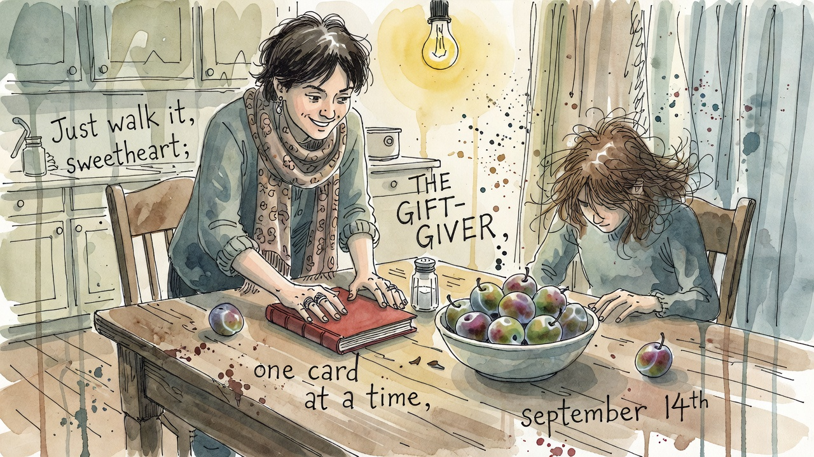
It is small, clothbound, the color of old brick. On the cover, a figure stands at the edge of a gold cliff with a knapsack and a little white dog, one foot lifted into nothing. Wren runs her thumb along the spine. The linen is worn soft as skin at the corners, as though someone else has already carried it a long way.
Maren hugs her — hard, brief, the rings on her fingers pressing cold into Wren's shoulder blade — and then she is in her car and pulling away, and Wren is alone with the plums and the book and the overhead light buzzing its yellow hum above the kitchen table.
The light has been on since March. No one turns it off. Wren does not think about why, in the same way she does not think about the toothbrush in the bathroom cup or the knapsack hanging on the hook by the back door, canvas faded to the color of river water, one buckle undone. These are just things that are in the house. They have always been in the house. If she thinks about them as evidence she will have to be a detective, and she is not a detective. She is a girl with a book and a road to walk.
She opens it.
***
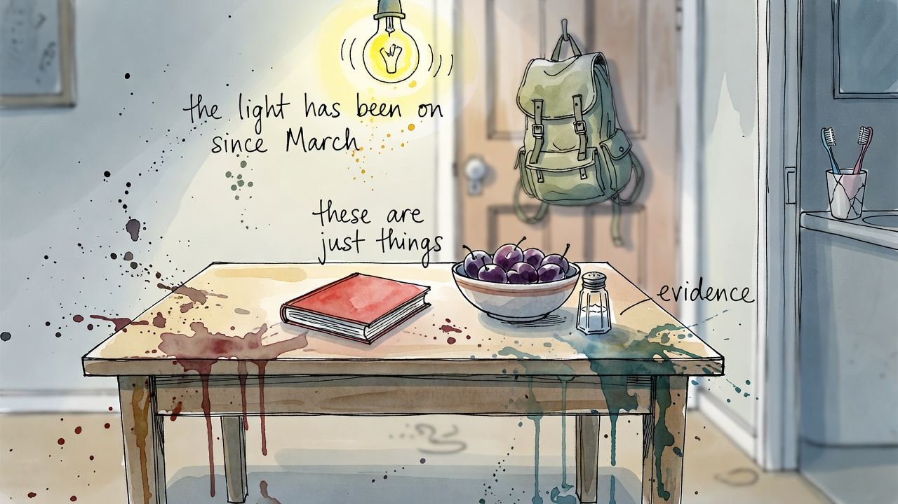
Here is the first card: 0, The Fool.
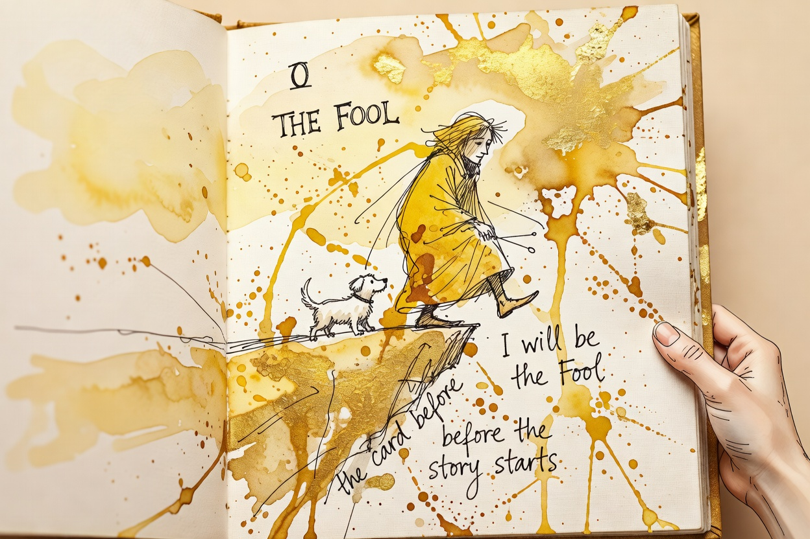
The figure is a girl — Wren decides this, though the illustration is ambiguous, the face half-turned, the body slight under a yellow cloak. She carries everything she owns on her back. At her heels a small dog trots with its ears pricked forward, unworried, because dogs do not understand cliffs. The sky behind her is a wash of gold leaf that the printer has let bleed past the margin, and beneath her lifted foot there is nothing, and it is bright.
Wren reads the facing page. The Fool is the zero, the empty set, the card before the story starts. She is the one who steps off without knowing where the road goes. She is not brave. She is just too new to understand the question.
I will be the Fool, Wren thinks. She thinks it in a voice that does not quite sound like hers — lower, steadier, borrowed from the narrators of books she has loved, women who walk through myth with their shoulders back and their names ringing. I will carry what I need and leave the rest. I will walk the twenty-two stations of this road, and at the end there will be an end, and I will arrive there, and I will be done.
She gets her notebook — the good one, the Moleskine with the elastic band, college-ruled because she is not an artist — and writes the date. September 14th. Below it she writes:
Day One. Card 0. The Fool sets out.
The handwriting is very neat.
***
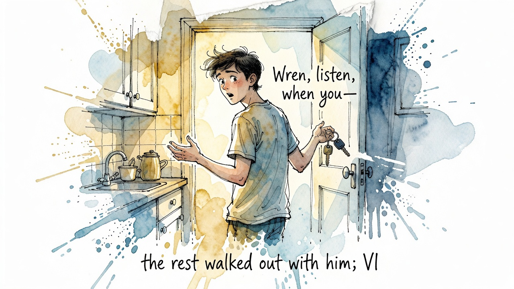
Six months is long enough to learn the etiquette of the thing. Wren knows how to answer the question — "I'm okay, thanks" — in a tone that is warm enough to be believed and closed enough to end the conversation. She knows that Mrs. Tierney at the post office will touch her arm and hold on too long, so she goes to the counter on the left. She knows that her mother's garden is not a place to linger and her father's workshop is not a place to knock.
She knows that Caleb drowned in March, off the headland at Carra Point, and that the water was four degrees and that his body was recovered the following morning, and that these are facts in the same way the periodic table is facts — memorized, inert, useful for tests.
She knows that he was twenty and she is sixteen and the difference between those numbers has not changed, which is the kind of math that should not be remarkable but is.
She knows that the last thing he said to her was the beginning of a sentence he did not finish: Wren, listen, when you — and then his phone had buzzed and he'd looked down at it and laughed at something, and the end of the sentence walked out of the kitchen with him, car keys in hand, and she has not recovered it. She has tried. She has held the fragment up to the light from every angle, the way you hold a broken shard of pottery and try to see the whole cup, and there is no whole cup. There is only Wren, listen, when you — and then the air where the rest should be.
This is fine. She is walking the road now. The road will get her through it.
***
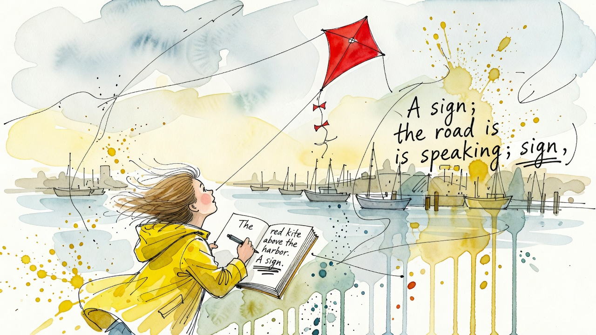
She begins on a Saturday, because beginnings should feel deliberate, and because there is nothing else to do.
The coast road starts at the car park behind the chemist's and runs north along the cliff for six miles before it dips inland toward the farms. Wren has walked it before — with Caleb, with the dog, once alone in January when she wanted to be cold enough to stop thinking, which did not work but was at least a different kind of thinking.
Today the sky is high and pale and the wind smells of salt and diesel from the harbor. She wears the yellow raincoat because the Fool on the card wears gold, and she brings the knapsack from the hook by the back door — Caleb's knapsack — because the Fool carries everything she needs. She does not think about this choice. She puts the book and the notebook and a bottle of water and a cereal bar inside, and she clips the one undone buckle, and the weight sits between her shoulder blades like a hand.
Sam, the retriever, follows her to the door and stands there with his grey muzzle tipped up, tail swaying once, twice.
"Fine," she says. "Come on."
He falls into step at her heels, unhurried, ears soft. Good. Every Fool needs a dog who doesn't know about cliffs.
The road unrolls ahead of her, pale gravel turning to packed dirt, the sea a flat tin sheet to the left, the gorse blazing yellow on the right. Above the harbor a child is flying a kite — red, diamond-shaped, pulling hard against its string — and Wren watches it for a moment, lets it tug at something in her chest, and then writes it down in the notebook without breaking stride.
The red kite above the harbor. A sign. The road is speaking.
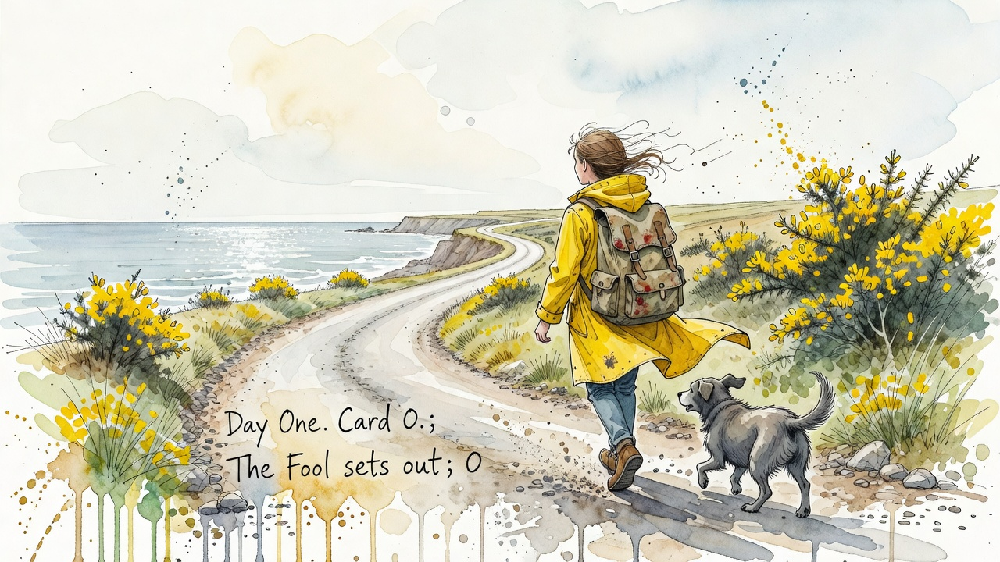
She likes how this sounds. She likes the way the sentence sits on the page, certain, literary, as though she is someone to whom signs appear because she is the kind of person who walks roads and reads them. She underlines the word sign.
The gravel crunches under her boots. Sam's nails click beside her. The wind pushes her hood back and she lets it stay, her hair lifting, and she imagines how this looks from above — a girl in gold on a grey road, a dog at her heels, a bright horizon pulling her forward — and the image is so clean, so right, that she holds it in her mind like a coin in her palm and does not look at the other side.
The road will get her through it. She is sure of this the way she is sure of tides — because someone has written it down, because there is a book, because the stations are numbered and the numbers go in order and at the end of the order there is an end. Twenty-two cards. Twenty-two chapters. Then done.
She walks. The kite tugs against its string above the harbor, red and insistent, and the kitchen light back home buzzes on for no one, and somewhere in the bathroom a blue toothbrush stands in a chipped cup next to a pink one, waiting.
But Wren is on the road now. She is on the road, and the road goes forward, and she has a book that tells her how.
She picks up her pace. Sam trots to keep up. The cliff curves ahead, and beyond it the sky is enormous and uncomplicated, and she steps toward it with the knapsack riding high on her back and her face turned away from us, toward the bright, toward the stations, toward the end she is certain is there.
She will get through it.
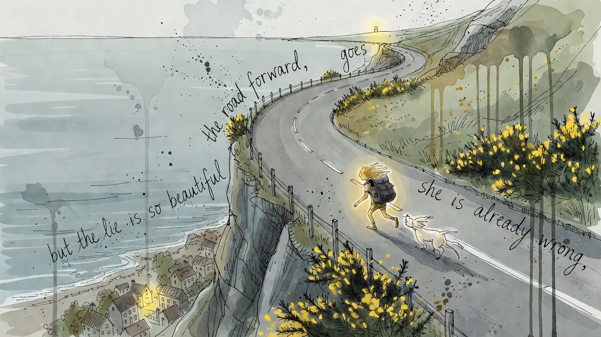
She is already wrong, but the lie is so beautiful — the gold coat, the brave road, the lifting wind — that it will carry her for a while yet.
Pier Magician
The pier smells of diesel and fish guts and the particular salt-rot of rope left too long in water.
Wren walks its length with her hands in the pockets of the yellow coat, Sam's nails ticking the boards behind her. The tide is out. Below them, between the slats, the water has pulled back to show a shelf of dark rock furred with weed, and the boats in the harbor lean on their keels at angles that look like resignation.
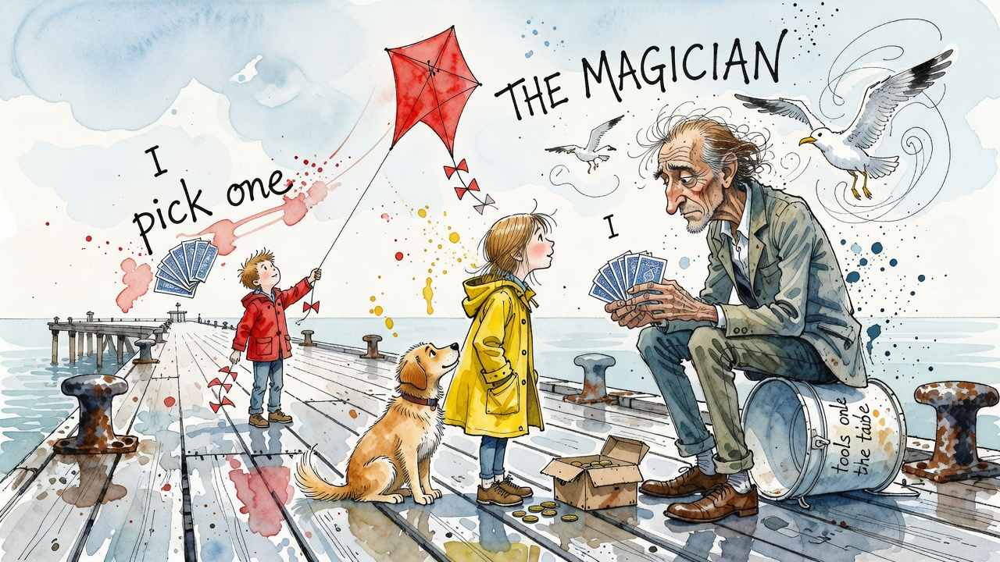
She has come here because the book says the Magician is the first card after the Fool — the one who lays his tools on the table and says, These are what you have. Work with them. In the illustration he stands behind a wooden table draped in red, one hand pointing up, the other down, and before him: a cup, a coin, a sword, a wand. Four instruments. Four ways of moving through the world.
Wren has decided the pier is the Magician's table because it is the longest flat surface she knows.
She is aware this is a reach. She reaches anyway.
***
He is set up near the end, where the boards go silver and splintered and the bollards are too rusted for anyone to tie off on. A wiry man, somewhere between thirty and fifty, with a face like a hatchet left out in weather and fingers that move as though they have their own agenda. Before him: an overturned white bucket, and on the bucket a fan of cards, face-down, their backs a faded blue.
He is not a tarot reader. He is doing card tricks for no one.
There is a small cardboard box at his feet with a few coins in it, and he palms one — Wren sees it go, a fifty-cent piece sliding between his second and third knuckle like water finding a crack — and when he opens his hand again the coin is gone and in its place is a card, the seven of spades, which is not even the right kind of card but does not seem to bother him.
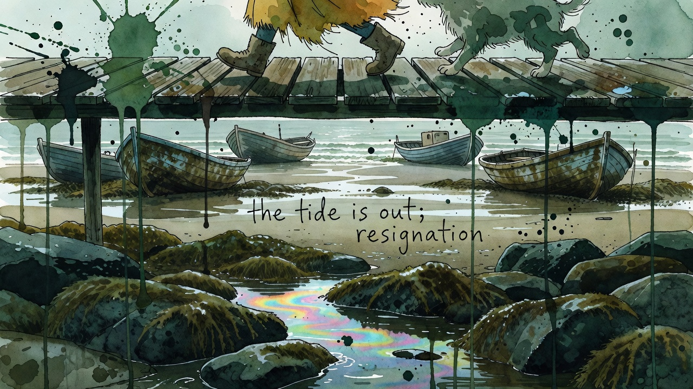
"Pick one," he says, noticing her. His voice is flat, coastal, unhurried.
"I'm all right."
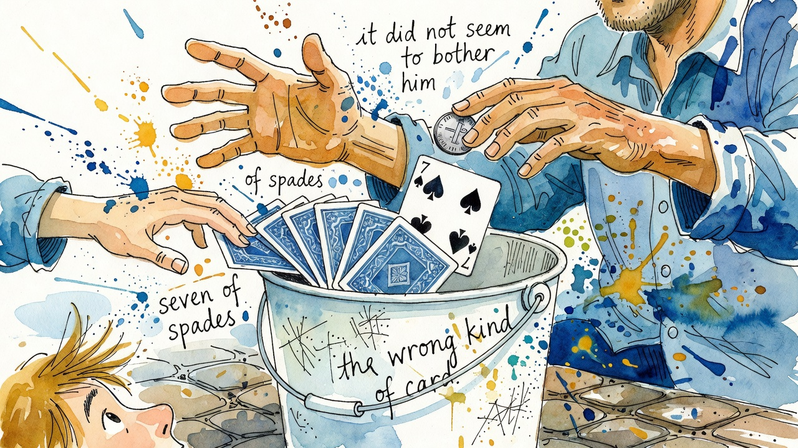
"Didn't ask how you were." He fans the deck across the bucket in a single sweep, a blue crescent, perfectly spaced. "Pick one."
Wren picks one. The four of clubs.
"Grand," he says, and takes it back without looking at it, and it vanishes somewhere into his left hand and is gone.
Sam sits down and watches the man's fingers with the polite attention of a dog who has been promised nothing and expects less. The busker scratches him behind the ear without breaking his rhythm, the cards passing hand to hand to hand, appearing, disappearing, a shuffled architecture that builds and collapses and builds again. Behind him gulls wheel in long slow arguments over the harbor.
"You do this every day?" Wren asks.
"When it's not raining."
"Does anybody stop?"
"You stopped."
She has. She is standing at the Magician's table and the tools are laid out and the gulls are calling and the boards are warm underfoot, and this is — she can feel it settling into the shape she needs — this is the second station. Card I. The Magician shows the Fool what she is carrying.
She drops a euro into his box. He nods once, palms another coin, opens both hands empty.
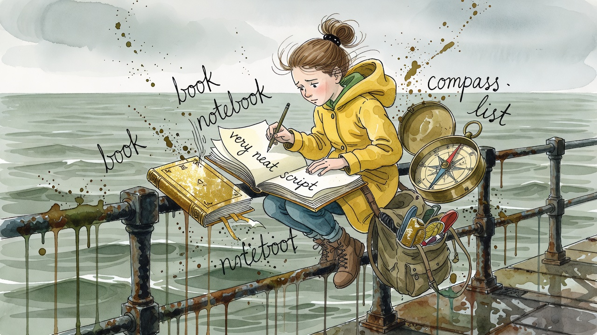
***
She walks to the railing at the pier's end and takes out the notebook.
The Magician's tools are four, she writes, and then she lists her own:
1. The book — the road itself, the map with its twenty-two stations, its gold-leaf skies, its figures who know where they are going because someone has drawn them mid-stride.
2. The notebook — the record, the ledger of the walk, the proof that she is doing it. A cup to hold what she pours.
3. The compass — Caleb's, brass, the size of a biscuit tin lid, which she finds in the knapsack's front pocket where she did not put it and does not remember packing. It is there. It has been there. Its needle swings north and holds, and north along this coast is where the cliff curves toward Carra Point, and she writes the word compass and underlines it and does not write his name.
4. The list — which she makes now, sitting on the railing with her ankles hooked on the lower bar: the twenty-two stations, numbered, one per line, in the neatest hand she can manage while the wind tugs at the pages.
0 — The Fool I — The Magician II — The High Priestess III — The Empress IV — The Emperor V — The Hierophant VI — The Lovers VII — The Chariot
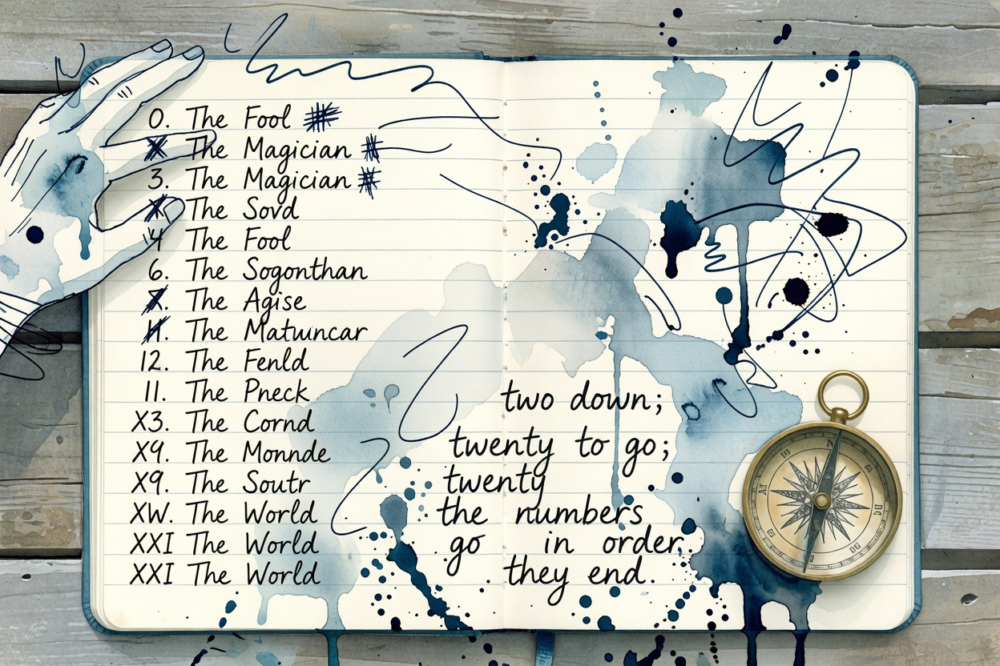
She writes them all, down to XXI — The World, and the list fills a page and a quarter, and when she is done she goes back to the top and draws a small careful tick beside The Fool and another beside The Magician.
Two down. Twenty to go.
The numbers are a comfort. They go in order. They end.
***
On the walk back along the pier she passes a kite-seller — a woman with a folding table and a rack of cellophane-wrapped diamonds in every color — and a child is standing on tiptoe to hold one, red, already unwrapped, its string pulling taut against a wrist too small for the wind it has caught. The kite bucks and climbs and Wren watches it stutter upward, red against the pale sky, and something in her chest lifts with it, involuntary, the same small tug she felt yesterday on the coast road, and she thinks, There it is again. The red kite. The road is speaking to me.
She does not write this down because she already wrote it yesterday and the sentence has not changed, and this feels, for half a second, like a problem — the same sign appearing twice should mean something different the second time, shouldn't it? — but she shelves the thought. Files it. Moves on.
The busker is still at the end of the pier, cards fanning and collapsing, fanning and collapsing, and Wren looks back at him once and sees him from this distance as the illustration sees him: a wiry figure at a table with his instruments laid out, one hand raised, the gulls his halo, the bucket his altar. He looks better from here. Everyone looks better from far enough away.
Sam presses his nose into her palm. She dries it on the coat.
***
At home the kitchen light is on. It is always on. She walks past it and up the stairs and sits on her bed with the notebook open and writes:
Day One.
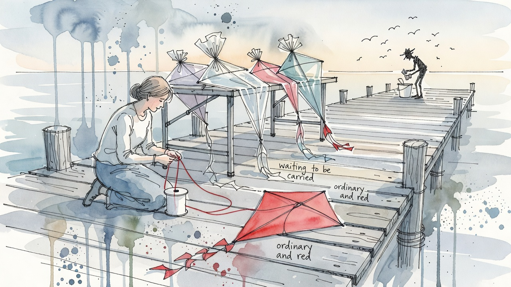
She pauses. Looks at the previous entry — September 14th, Day One, Card 0. She had written Day One already, two pages back, for the Fool.
She considers this. The Fool was Day One because it was the beginning. But the Magician is also Day One because both happened today, because she walked the coast road and then the pier in a single afternoon, and the day is not done yet and already she has two stations behind her. She could call this Day Two. She could renumber.
She writes Day One again, without the numeral, and adds:
Card I. The Magician. Tools: book, notebook, compass, list. The pier is his table. The road is speaking.
The handwriting is very neat.
She closes the notebook and sits with it in her lap and the knapsack at her feet and the compass she did not pack pressing its small brass weight against the canvas. Through the wall she can hear the sander in her father's workshop, the same low whine it has made every evening since spring, and downstairs the kitchen light hums on for no one, and in the bathroom the two toothbrushes stand in their cup, and none of these things are on the list of twenty-two stations, and none of them have numbers, and Wren does not look at them because she is on the road now, and the road is numbered, and the numbers go in order, and the order will carry her through.
She puts the notebook in the knapsack. She buckles it shut.
Tomorrow: Card II. The High Priestess.
The list is so clean. The stations so certain. And she is two ticks in and the whole bright road is ahead of her, marked and numbered and waiting, and if she walks it correctly she will arrive at a place where she does not have to carry the compass she did not pack, and this is what the Magician showed her — that she has tools, that the tools are enough, that the work is simply a matter of using them in order.
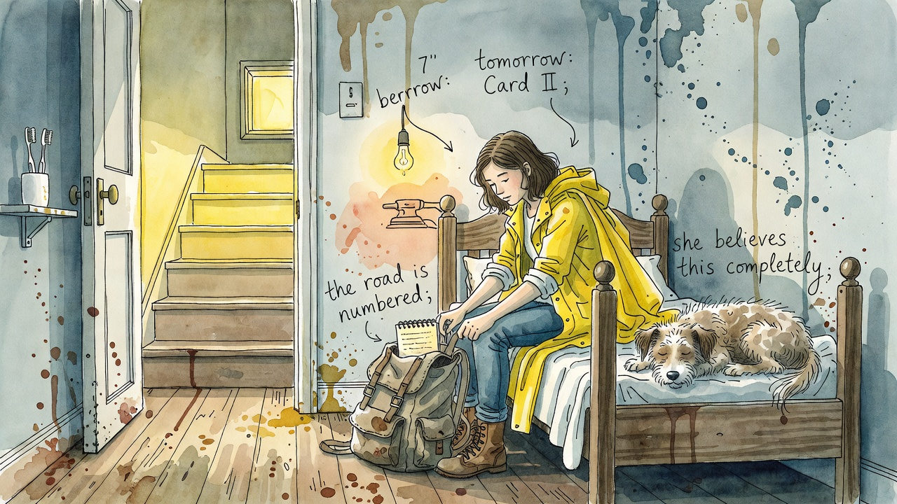
She believes this completely.
Outside, the red kite has come down. The child has gone home. The string is being wound around a plastic spool by a mother whose face Wren cannot see, and the kite lies flat on the boards, ordinary and red, waiting to be carried.
Librarian's Hands
The library smells of old paper and radiator dust and the quiet, stubborn patience of glue. It’s a smell Wren has always associated with being told to whisper. Sam is not allowed inside; she ties his lead to the bike rack, where he sits with the resigned dignity of a dog who has been asked to guard a kingdom of bicycles, and she pushes through the heavy oak door alone.\n\nInside, the light is yellow, strained through tall, water-streaked windows. The air is thick with held breath. And at the circulation desk, between two tall carts of returned books that rise on either side of her like pillars, sits Ms. Ivy Petrosian.\n\nThis is the place. It has to be.\n\nThe book shows the High Priestess seated on a stone throne between two pillars, one black, one white. In her lap is a scroll, half-hidden. Behind her, a veil embroidered with pomegranates. She holds a secret and does not offer to share it. You have to know how to ask.\n\nWren sees the carts of books, one stacked with dark-spined histories, the other with pale paperbacks. She sees the tide chart pinned to the corkboard behind Ms. Petrosian’s head, its blue crescent moons marking the neaps and springs. The veil. The secret knowledge.\n\nShe is building the story in her head before she even takes a step. This is how the road works. You find the station, and you learn to see it correctly.\n\nMs. Petrosian looks up as Wren approaches, her half-moon glasses low on her nose. Her hair is the color of iron and falls loose over the shoulders of her blue cardigan. She doesn't smile, but her face softens, a subtle shift in the landscape. She knew Caleb. Not well, but she knew him. He was a library kid.\n\n“Wren,” she says. Her voice is like the library itself, low and unhurried.\n\n“Hi, Ms. Petrosian.” Wren puts her hands on the cool, worn wood of the counter. She has her script ready. She has been rehearsing it.\n\n“I’m on a kind of… walk,” Wren begins, the words feeling thinner in the quiet air than they did in her head. “A project.”\n\nMs. Petrosian waits. She doesn’t ask what kind of project. She doesn't offer a platitude about Caleb, doesn’t say the awful, smooth words everyone else says: *so sorry for your loss, thinking of you, let us know if you need anything*. Her silence is a space, not an absence. Wren, in her current state, mistakes it for a test.\n\n“I was wondering,” Wren says, getting to it. “If you remembered what books he liked. Caleb.”\n\nShe feels a brief, hot shame at using his name like a key to open a door on her map. But the road demands it.\n\nMs. Petrosian’s long fingers rest on a stack of date-due slips. She looks at a point somewhere over Wren’s shoulder, remembering. “He liked the charts,” she says, finally. Her eyes drift to the tide chart on the wall. “The coastal surveys. He’d spread them out on the big table in the reference room. Said he was planning an expedition.”\n\nThe simple, factual sentence lands in Wren’s chest and immediately begins to transform. *He was planning an expedition.* Of course he was. He wasn't just a boy who went to the cliff; he was a navigator, a reader of secret maps. The High Priestess is revealing a hidden truth. She is showing Wren the scroll.\n\nWren doesn't cry. Crying is not on the list. She nods, a single, solemn dip of her chin, as if receiving a prophecy.\n\n“Thank you,” she says.\n\nMs. Petrosian’s gaze comes back to her. It’s a clear, steady look. “He was a good boy, Wren.”\n\nAnd then she stands, the wooden chair scraping softly, and disappears between the stacks without another word. Wren stands at the counter, her reflection a faint ghost in the polished wood. She can hear the soft thud of a book being pulled from a shelf, then another. The sound of a decision being made.\n\nWhen Ms. Petrosian returns, she is holding a single book. It’s a hardcover, heavy, its jacket a plain, forest green. *Coastal Foraging of the Upper Tides*. She lays it on the counter and slides it toward Wren.\n\n“This one,” she says. “You might like this one.”\n\nIt’s not a book of sea charts. It’s not poetry. It is, as far as Wren can tell, a book about edible seaweed.\n\nBut a gift from the High Priestess cannot be refused. It is a tool. A clue. Wren doesn’t understand it, which she decides is the entire point. The scroll is not meant to be read easily.\n\n“Okay,” Wren says. She takes the book. It feels solid and real in her hands. Ms. Petrosian opens it, stamps a card with a satisfying clack-thump, and slides it into a sleeve in the back. The sound is final.\n\nBefore she leaves, Wren sits at an empty carrel, the one by the window that looks out onto the street. She takes out the notebook and the pen. She can see Sam, a patient brown shape by the bike rack. From here, she can see Ms. Petrosian at the desk, framed perfectly between the two tall carts of books, the tide chart a map of mysteries behind her. The image is exactly right.\n\nShe uncaps the pen. Her handwriting is small and neat, a fence built to contain a field.\n\n*Day Two. Card II. The High Priestess.*\n\n*She sits between the pillars of what is known and what is not. Her silence is a kind of wisdom. She guards the secrets of the tides, the moon. She told me he was an explorer. She gave me a book I do not understand. The road provides what you need, not what you ask for.*\n\nShe closes the notebook. She draws a third careful tick on her list of twenty-two stations. The motion is precise, satisfying. Done. Another station passed. She is moving. She is getting through it.\n\nShe puts the foraging book in her knapsack, its hard corners pressing against the brass of the compass. She walks to the door, pushing it open into the bright, noisy afternoon. As she steps out, she glances back one last time.\n\nMs. Petrosian is still standing behind the desk. She hasn't moved. She is watching Wren go, her expression unreadable, her long hands resting on the counter where the book had been. And her eyes, behind the half-moon glasses, are not filled with mythic wisdom. They look, Wren thinks for a strange, untethered moment, incredibly tired.
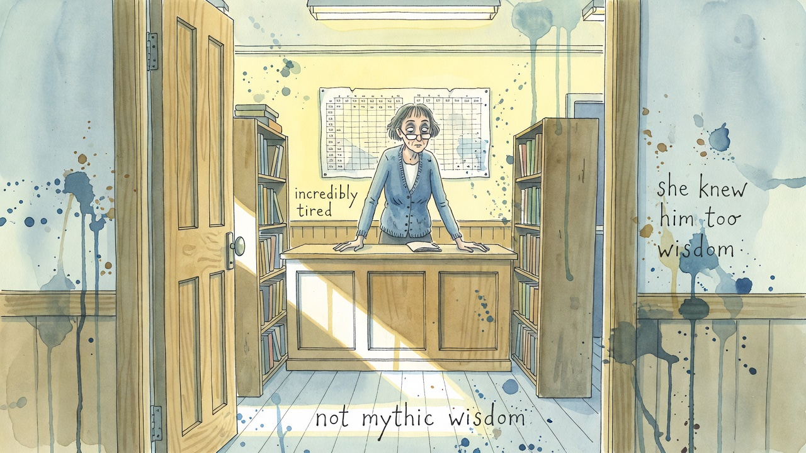
Lightning Tower
The doorbell rings at 11:47. Wren hears it as thunder.
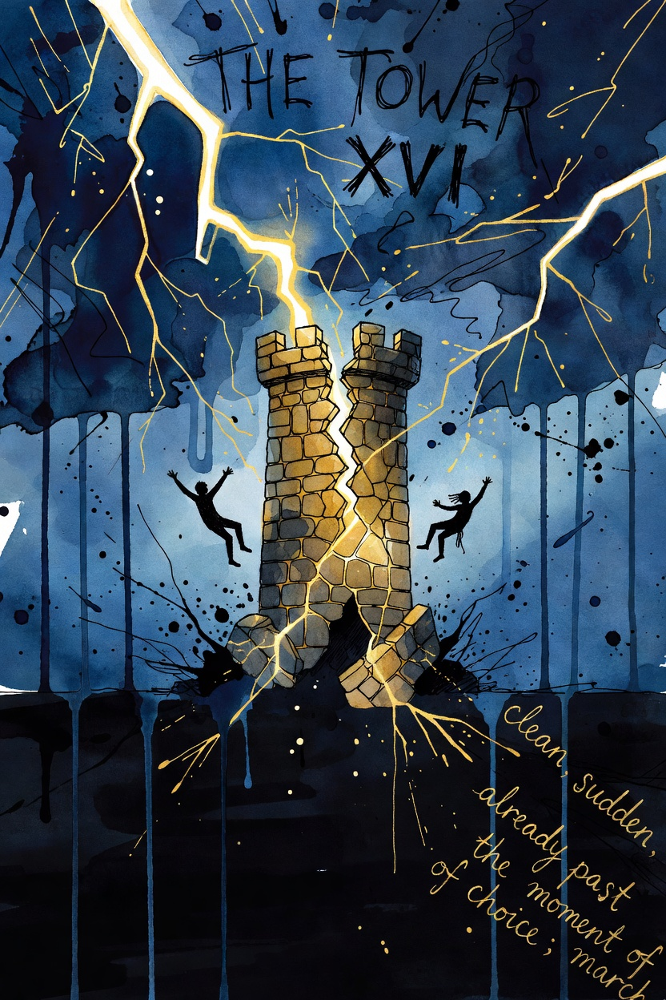
She is already awake, reading under the blanket with a flashlight, when the sound splits the house open. She counts the seconds after it, the way Caleb taught her once, for lightning and storm. One. Two. Three. Nothing follows. The air stays still.
Her mother reaches the door first. Wren watches from the top of the stairs. The yellow kitchen light is still on behind her, the one no one ever remembers to switch off. Two men stand on the step. Their uniforms look wrong against the dark. One of them speaks. Her mother’s hand finds the doorframe. Then her knees give. She drops the way a figure drops when lightning finds the tower—clean, sudden, already past the moment of choice.
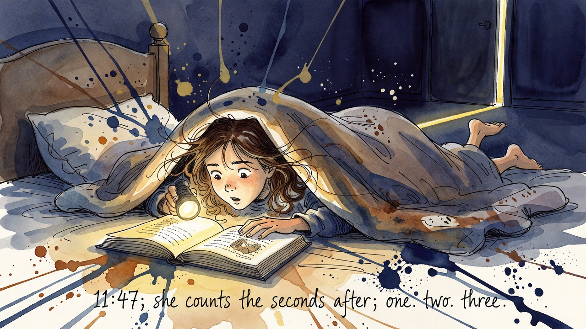
Wren does not move. The carpet under her bare feet feels ordinary. The banister is smooth under her palm. She can see the kitchen light reflected in the hall mirror, a small square of ordinary brightness no one has thought to turn out.
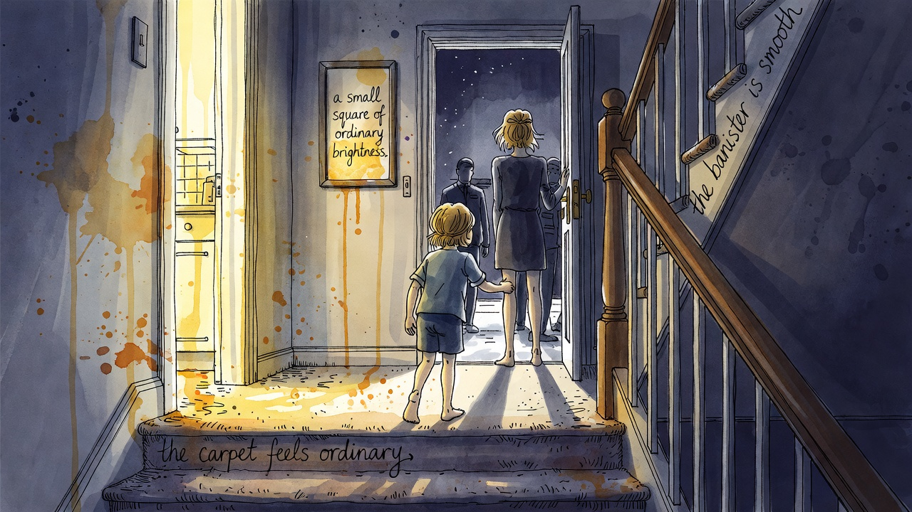
Her father comes from the workshop. He still has sawdust on his sleeves. He listens. He does not touch the doorframe. He puts both hands on his own knees as if the floor has tilted. Wren stays where she is, counting steps she does not take.
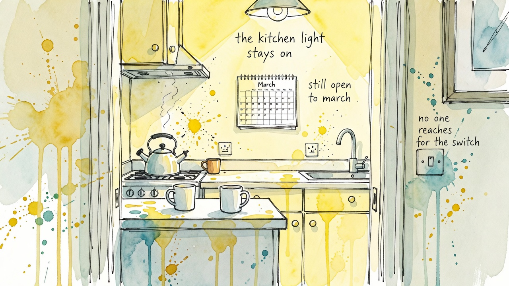
The men leave. The door closes. Her mother remains on the floor for a long time, one shoulder against the wood. Her father lifts her eventually. They do not speak. The kitchen light stays on. Wren watches the light stay on. She watches it because the alternative is to watch the place where her mother was standing before the sound arrived.
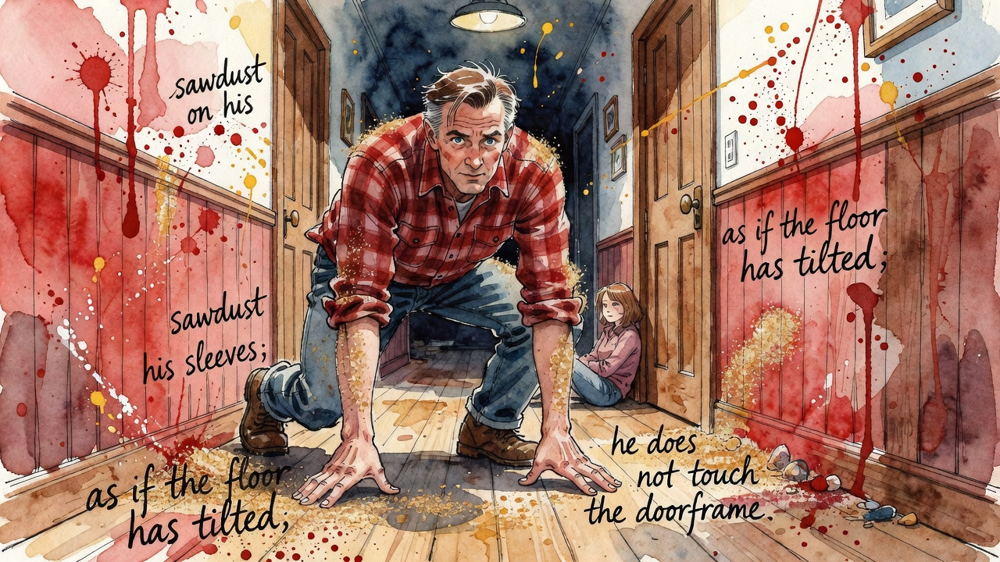
Later she will write it differently. She will say the tower split from foundation to crown. She will say two figures fell through clear air. She will say the cards showed it long before the cards existed. The language will be clean. The language will hold the moment at a distance where the edges do not cut.
In the kitchen the light remains. No one reaches for the switch. Wren stands at the bottom of the stairs now. She can see the kettle on the stove, the two mugs left from earlier, the calendar still open to March. The word that was said at the door does not repeat itself inside the house. It sits where it landed. Wren does not pick it up.
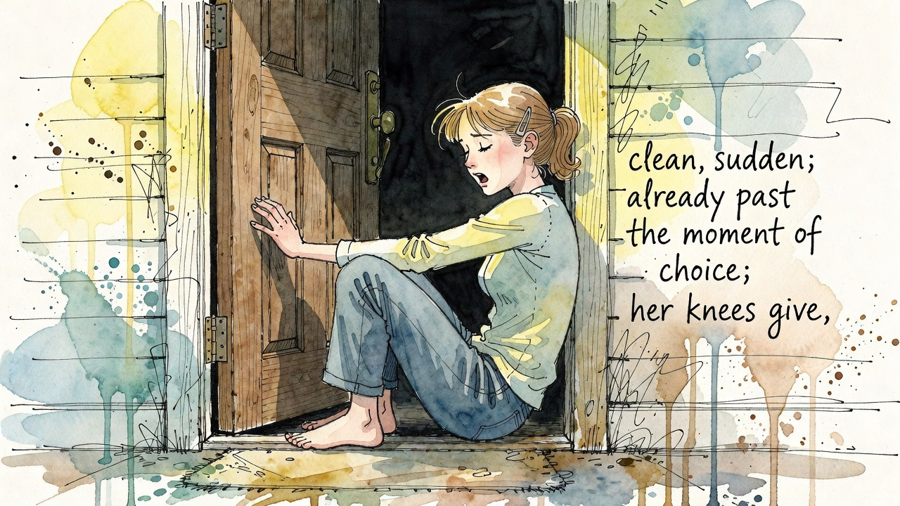
Her mother sits at the table. Her father stands at the window. Wren watches the kitchen light make the ordinary things look exactly as they have always looked. She waits for someone to tell her what to do next. No one does.
And then it was over.
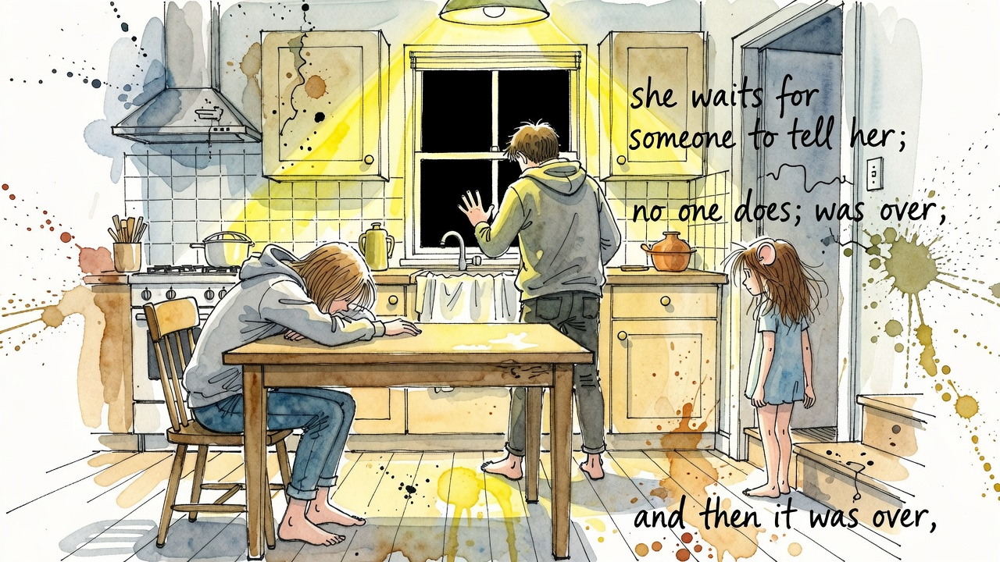
Mother Garden
The garden has gone to ruin and Wren is calling it beautiful.
She stands at the back door with the notebook open, the Moleskine's elastic band looped around her wrist like a bracelet, and writes: *The Empress sits among her harvest.* The pen moves easily. The words are the right shape. She does not look up yet because looking up would require adjusting the sentence, and the sentence is nearly perfect.
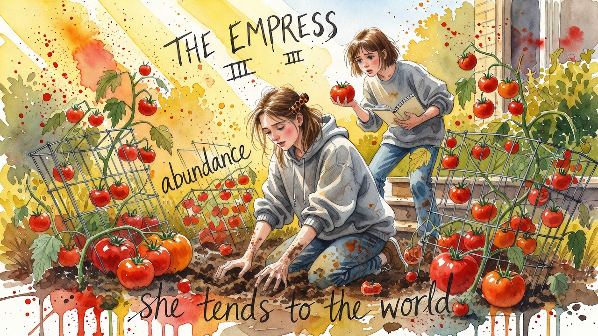
Her mother is kneeling between the tomato cages. Two of them have buckled inward, wire frames listing like drunk dancers, and the vines have spilled across the dirt in every direction, heavy with fruit no one has picked. The cherry tomatoes have split their skins. The beefsteaks sit in the mud, red-shouldered and enormous, going soft on the undersides where they touch the ground. A cucumber has grown so long it curved back on itself. The whole bed smells sweet and wrong, the way things smell when they have been generous past the point of use.
Wren writes: *generous.*
Her mother's hands are in the soil up to the wrist. She is not weeding. She is not planting. She is pulling at something Wren cannot see, or she is just holding the dirt because the dirt is there and her hands need to be somewhere. The grey hoodie — Caleb's, the one from the university open day he went to in February, the one with the small rip at the left cuff where he caught it on a fence — swallows her. The sleeves are pushed past her elbows but keep sliding back. Her hair is clipped up with a tortoiseshell claw that is losing its grip. She has not washed it. Wren notices this the way she notices the collapsed cages: as texture, as detail, as something to render.
*Hair like a curtain drawn. The Empress does not tend to herself. She tends to the world.*
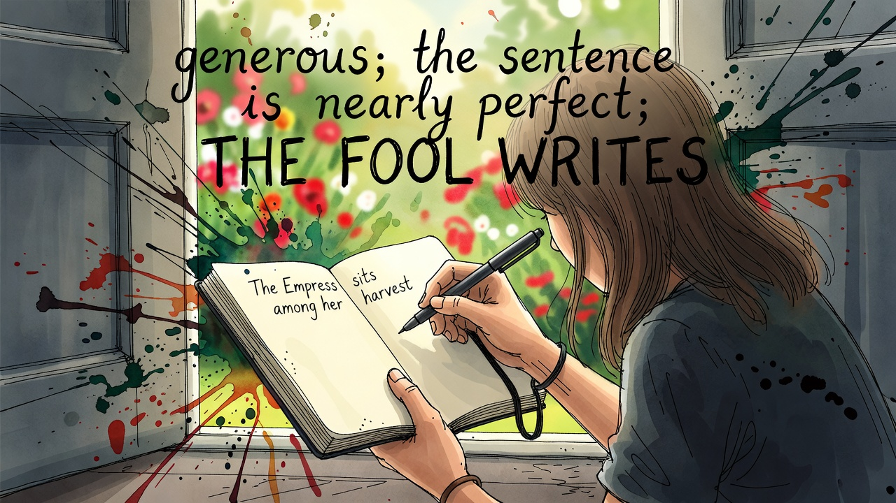
The afternoon is warm for September. A yellowjacket works the split tomatoes in small, efficient circles. The fence between their garden and the Kowalskis' is covered in bindweed that has already gone to seed, white trumpet flowers browning at the edges, the whole tangle so thick it has pulled the fence an inch toward their side. Beyond it, the Kowalskis' oak drops the first early leaves, and in the upper branches something is caught — red, angular, tail snapping in the breeze. A kite. Wren sees it from the corner of her eye and writes it down before she looks at it properly.
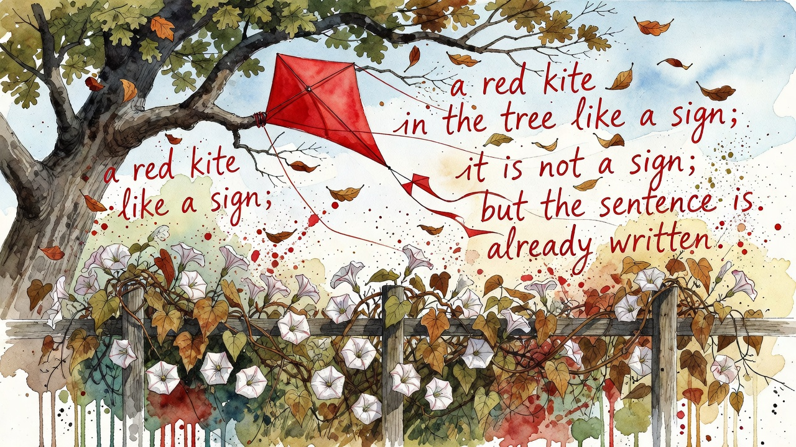
*A red kite in the tree like a sign.*
She looks. It is a cheap diamond kite, the kind sold at the pier for four pounds, its string wrapped twice around a branch and its tail — red plastic, not ribbon — fluttering against the bark. It must have gotten away from someone on the beach road. It is not a sign. But the sentence is already written, and the sentence is what matters on the road, and the road is what she is walking.
Her mother speaks without turning. "There's tomatoes."
"I see them."
"They all came at once. I couldn't—" She stops. Pulls at whatever is under the soil. Her shoulder blades move beneath the hoodie like something trying to surface. "There's bags in the kitchen. If you want to take some."
Wren steps off the back step and into the garden. The grass is ankle-high between the beds. Dandelions have gone to globe, and she walks through one and watches the seeds lift. She does not write this down because the notebook is for the stations, not for the ordinary, but she thinks the word *abundance* and holds it in her mouth like a stone.
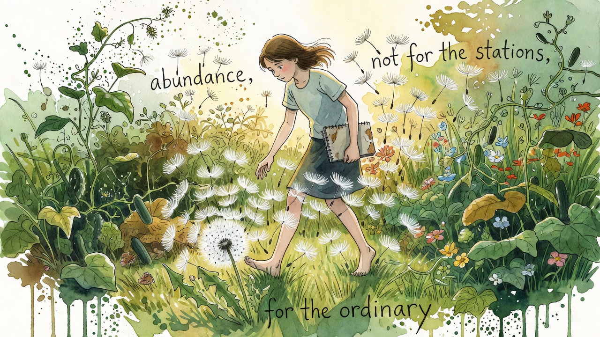
Her mother has not looked at her. This is not unusual. Her mother has been looking at the ground since March, or at the middle distance, or at the kitchen table where the wood grain makes a pattern she traces with her thumb. When she does look at Wren it is quick, almost furtive, the way you glance at a wound you are not ready to clean.
"The cherry ones split," her mother says. "You have to get them before they split."
"They're still good."
"They attract wasps."
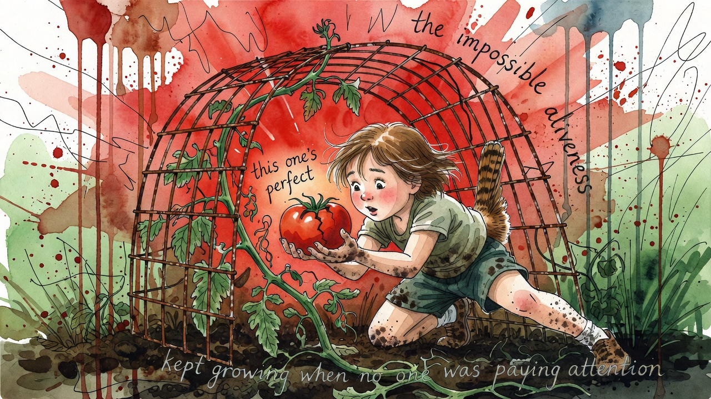
Wren crouches beside the nearest cage. The wire is rusted where it meets the ground, and the vine has threaded itself through every square, so heavy it has pulled the whole structure sideways. She reaches in. The tomato she finds is warm, almost hot, sun-held, the size of a child's fist. Its skin is tight and red and there is a crack along the shoulder where the growing outpaced the skin. She pulls. The vine gives it up with a small wet sound.
She holds it. She can feel the heat of it in her palm, the impossible aliveness of a thing that has kept growing when no one was paying attention. The garden did this by itself. The vines reached for the cages and the cages fell and the fruit came anyway, and her mother has been kneeling here among all of it, not harvesting, not weeding, just kneeling.
Wren does not say: *You should come inside.* She does not say: *When did you last eat.* She does not say his name. The hoodie says it for her. The ripped cuff says it. The way her mother's hands are in the soil as if soil is the only honest thing left — that says it too.
"This one's perfect," Wren says, and holds up the tomato.
Her mother glances. Just a flick of the eyes, brown and dry. She nods once. Goes back to the dirt.
Wren straightens. She stands behind her mother in the ruined garden with the tomato in her right hand and the notebook in her left, and for a moment she sees it as it will look on the page: *The Empress among her harvest. The daughter bearing fruit.* She can feel the shape of the chapter forming, clean and bright and usable. She can feel the mythic register clicking into place, the same way it clicked for the library, for the pier, for the tower that she has already begun to rewrite in language that holds the moment at a distance where the edges do not cut.
The red kite snaps in the neighbor's tree. A yellowjacket lands on a split tomato and walks its surface with mechanical patience. Her mother's hair is slipping from the clip, strand by strand, and the hoodie's left cuff — the ripped one — drags through the dirt each time she moves her arm.
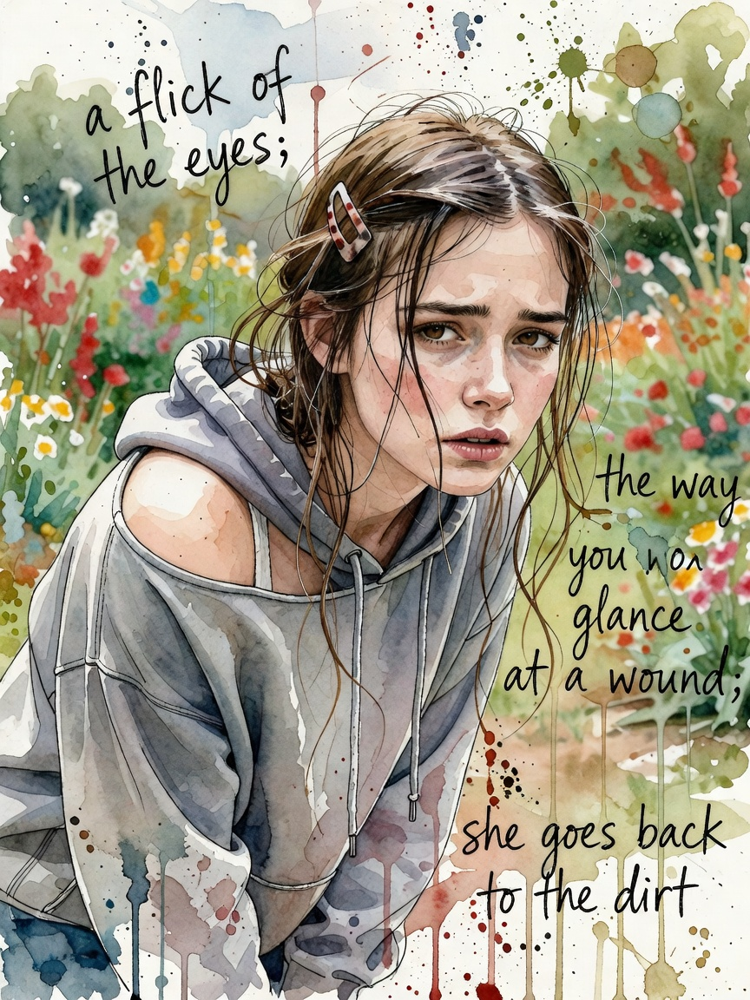
Wren opens the Moleskine. She finds the page. Beneath *generous* she writes, in block capitals:
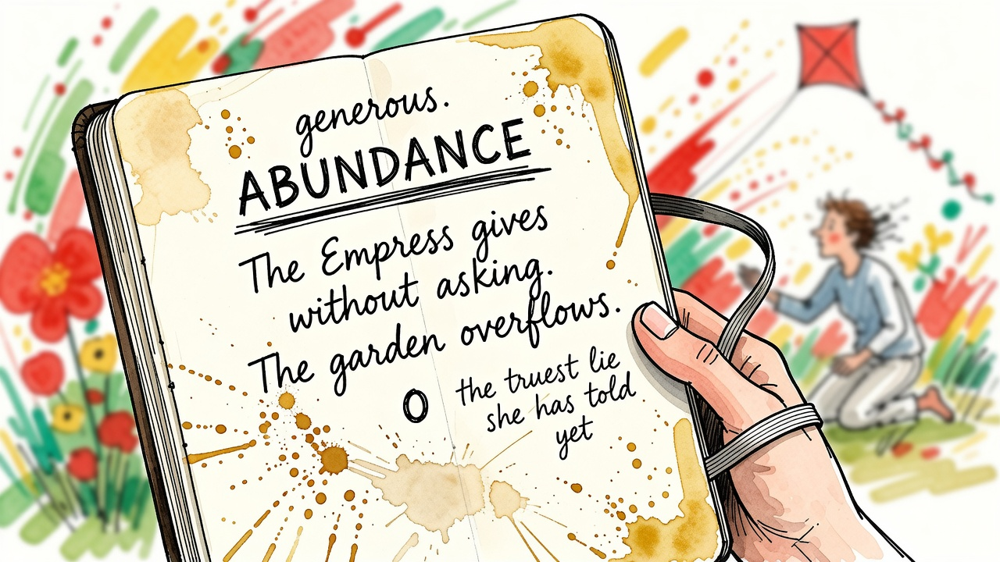
ABUNDANCE
She underlines it twice. She does not write: *My mother is kneeling in a garden that has gone to seed because no one has had the hands for it since March.* She does not write: *The hoodie is Caleb's.* She does not write: *She has not washed her hair in I don't know how long and I am standing here making it into a card.*
She writes: *The Empress gives without asking. The garden overflows.*
It is the truest lie she has told yet. It is beautiful. The afternoon sun catches the tomato in her hand and makes it glow, and her mother kneels below her in the collapsing green, and the kite twists in the oak like something trying to get free, and Wren closes the notebook with a snap that startles the yellowjacket into flight.
She puts the tomato on the back step where her mother will see it on the way in.
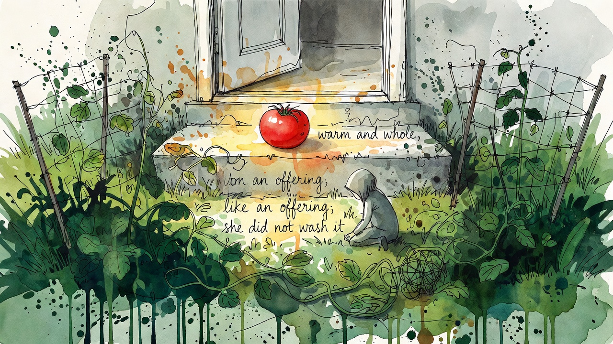
She does not wash it. She does not cut it. She leaves it there, warm and whole, like an offering to a woman who has not asked for one.
Father Workshop
The pegboard is perfect.
That is the first thing. The first thing is not her father, not his hands, not the sound the sandpaper makes against the grain — it is the pegboard. Every tool outlined in black marker on the pressboard behind it, every hook holding exactly the thing the outline says it should hold: claw hammer in the claw-hammer shape, Phillips head in the Phillips-head shape, the tin snips and the pliers and the adjustable wrench each hanging in their silhouettes like saints in niches. Her father built this pegboard when Wren was nine. She remembers the marker in his hand, the careful tracings, the way he knelt and let her outline the tape measure herself, her seven-year-old hand wobbling the line so the shape came out fatter than the thing it held. The tape measure still hangs in that wobbly outline. He has never redrawn it.
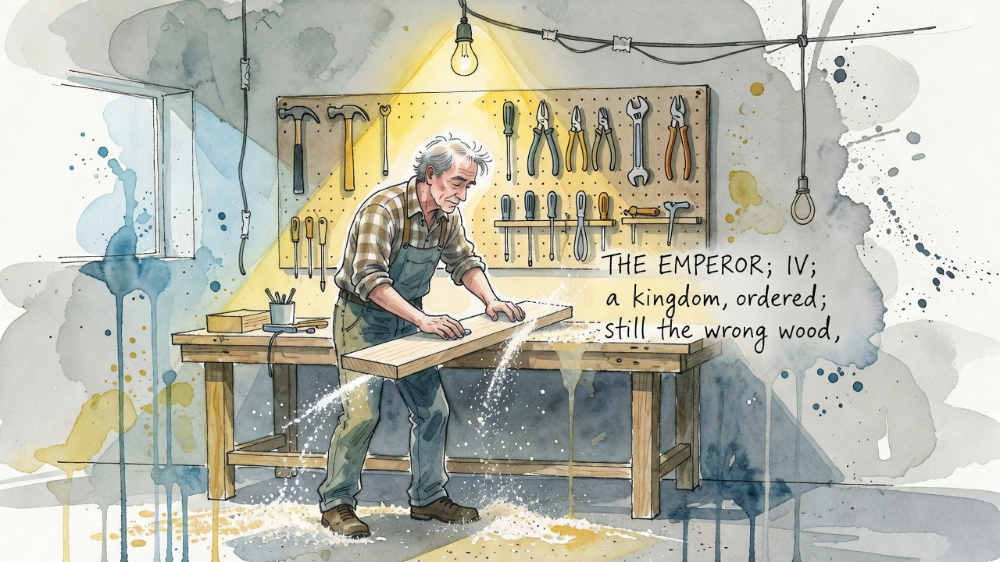
She stands in the doorway of the workshop — the converted side of the garage, the half with the window — and writes: *A kingdom, ordered. Every instrument in its place.*
Her father does not look up.
He is at the workbench under the single bulb, the one that hangs from a cord he wrapped in electrical tape three years ago and has meant to replace. The bulb throws a cone of yellow light that stops at his elbows and leaves the rest of the room in dusk. He is sanding. The plank is short — maybe fourteen inches — and pale, almost white, the grain so fine it looks like it has no grain at all. Pine, maybe, or poplar. Something soft. His right hand moves the sandpaper in long, even strokes, wrist to fingertip, wrist to fingertip, and the dust falls in a powder so fine it looks like flour sifting through a crack in the world.
Wren steps inside. The floor is concrete, swept clean, every shaving collected. Her father's workshop does not accumulate. Things come in, get measured, get cut, get joined, go out. This is how it has always worked. He builds shelves for people. He builds cabinets. Once he built a toy chest for a woman in Carrickmore whose daughter was turning four, and he rabbeted the joints by hand because the woman said her own father had been a joiner and she wanted the sound of it — the chisel, not the router. He told this story at dinner and Caleb said, *Da, you're basically a medieval artisan,* and their father said, *I'm basically a man who owns a chisel,* and that was the end of it.
The chisel hangs on the pegboard in its chisel-shaped outline. Wren does not look at it long.
"Hi," she says.
His hand pauses. The sandpaper rests on the plank. He looks up, and his face does what it always does now — a small recalibration, as if he has to remember which version of himself to be. The version that asks. The version that builds. He settles on the one that half-smiles, and the half-smile doesn't reach anywhere useful.
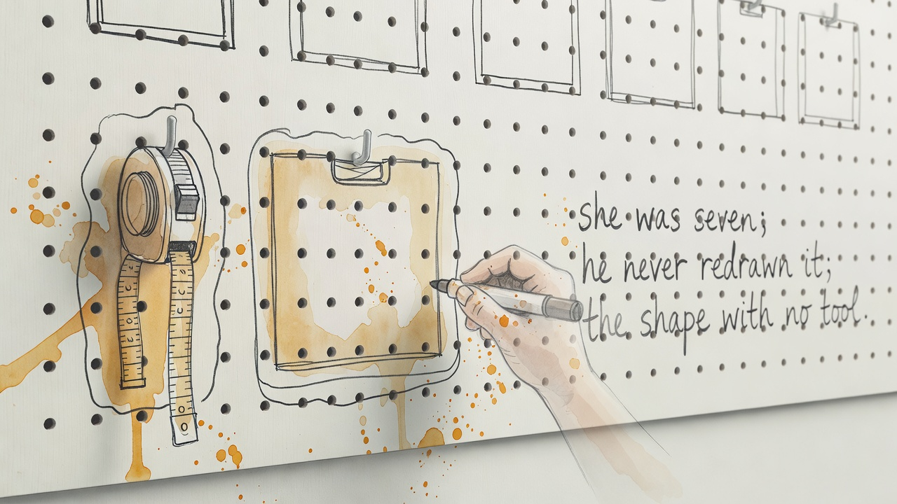
"Hey, bird."
He has called her *bird* since she was born. Wren. Bird. It has never not been the joke. She waits for the part where the joke used to be funny and it doesn't come, so she crosses to the bench and pulls up the metal stool, the one with the torn vinyl seat that exhales when she sits.
His hands are on the plank. She sees them now, under the bulb: raw across the knuckles, the skin between thumb and forefinger cracked and red, a blister on his left palm gone silver. Sawdust has settled into every line. They are her father's hands and they have always been rough, but this is not the roughness of work. This is the roughness of repetition. Of the same motion, the same surface, the same stroke, day after day, until the skin gives up arguing.
"What are you making?" she asks.
He looks at the plank. Runs his thumb along its edge. The edge is round now, sanded past any angle, the corners gone soft as soap.
"Shelf," he says.
Wren looks at the plank. It is poplar. She is almost sure. Poplar is too soft for a shelf — it dents if you look at it hard, and her father knows this the way he knows his own shoe size. He would never use poplar for a shelf. He would use oak, or ash, or at minimum a decent birch ply, and he would say so, unprompted, to anyone who asked, because wood selection is the sermon he has always been ready to deliver.
The plank is fourteen inches long. A shelf for what? A shelf for a dollhouse. A shelf for a single book. She does not ask.
"It's smooth," she says instead.
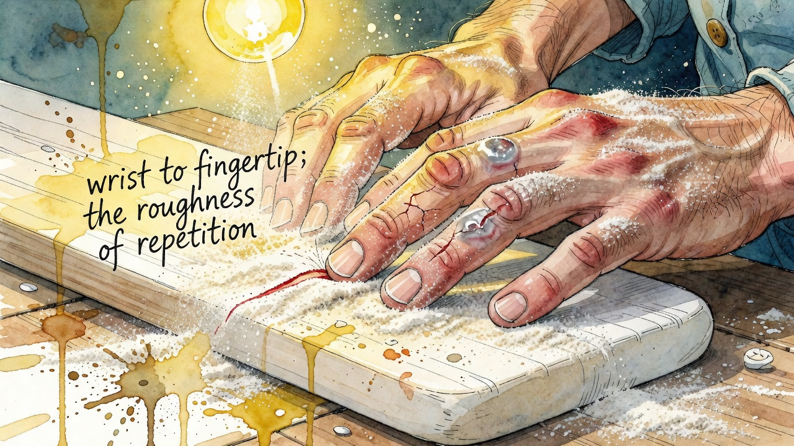
"Getting there." He picks up the sandpaper again. It is fine-grit, the kind you use at the end, the finishing pass, the pass that takes something already smooth and makes it smoother. But the plank has no shape yet. It has not been cut to length or width. It has not been routed or rabbeted or drilled for brackets. It is just a rectangle of the wrong wood being sanded past the point of purpose.
He starts again. Wrist to fingertip. The sound is soft and rhythmic, like breath through cloth.
Wren opens the notebook. She turns to the page after ABUNDANCE and writes: *The Emperor in his workshop. The kingdom runs because he wills it. Every tool answers to its outline. The builder builds.*
She pauses. Looks at the pegboard. The outlines are all filled — every tool in its place, every shape accounted for — except one. Bottom row, far left. A shape she traced herself at seven: the tape measure. It hangs there, faithful, in its too-fat silhouette, and next to it there is another outline, slightly larger, that holds nothing. She cannot tell what tool it was. The marker has faded at the edges and the shape is ambiguous — could be a square, could be a small level, could be something she has never learned the name of. The hook is empty. The outline waits.
She does not write this down.
"How are you doing, Wren?"
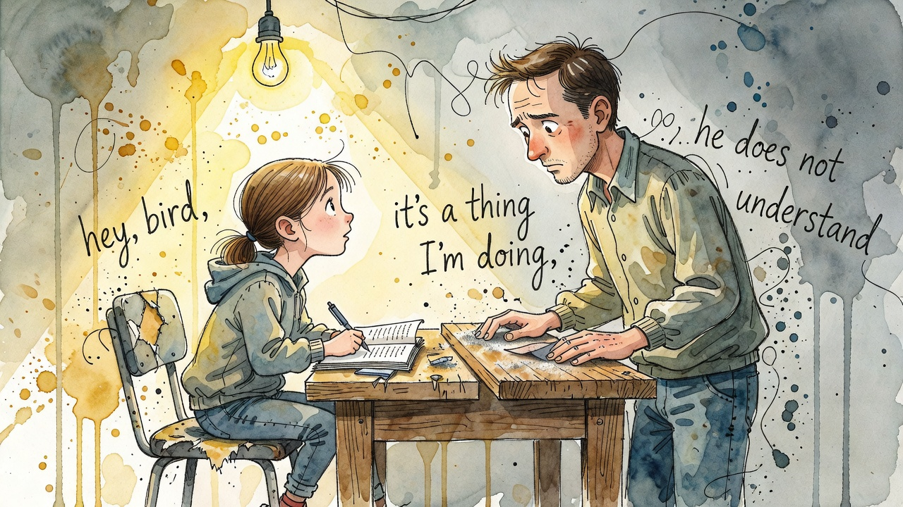
His voice goes up at the end. Not much. Enough that she can hear the distance in it — the question traveling from wherever he actually is to wherever he thinks she needs him to be. He does not stop sanding.
"I'm walking the road," she says.
His hand pauses again. He looks at her. His eyes are her eyes — brown, a little too close together, Halloran eyes, the ones Caleb got too — and they are confused. Not worried, not gentle, not any of the things the adults at school manage. Just confused.
"The road," he repeats.
"The cards. Aunt Maren's book." She holds up the notebook as if it explains something. "I'm walking the stations. It's like a—" She stops, because every word she can think of — *pilgrimage, journey, process* — sounds like something from a pamphlet, and her father builds shelves, and the word he would respect is *project,* but calling her grief a project feels wrong even for the version of her that is writing it all down in mythic register.
"It's a thing I'm doing," she finishes.
He nods. He does not understand. She can see the not-understanding settle into his face like sawdust settling on the bench, a fine layer of it, and he lets it be there. He does not ask a follow-up question. He picks up the sandpaper.
"That's good," he says. "That you're doing a thing."
The plank gets smoother. His raw knuckles move across it, and the dust falls, and the single bulb makes his grey hair almost white at the temples, and behind him the pegboard holds its kingdom in perfect order — every tool accounted for, every outline filled, except the one that isn't, the shape with no tool, the hook with nothing on it, patient as a door.
Wren writes: *The Emperor builds. The kingdom holds.*
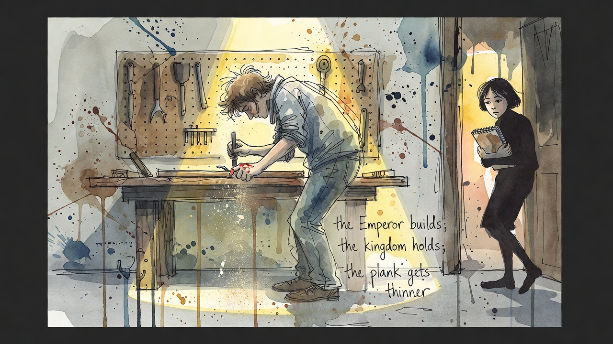
She does not write: *The plank is poplar. You don't make shelves from poplar. He knows this. He has known it for three weeks or five weeks or since March, and he is sanding it anyway because the sanding is the point, because the sound of the sandpaper is a sound his hands can make that is not the sound of nothing, and if he stops sanding he will have to put the plank down and the plank is the only thing between his hands and the air where the thing he was building used to be.*
She closes the notebook.
"I'll let you work," she says.
He nods without looking up. "There's leftover pasta. If you're hungry."
"Okay."
She gets off the stool. It exhales again. At the door she turns back, and the workshop is exactly what it was when she walked in: the cone of light, the man beneath it, the tool-shapes on the wall like a language she can read but not speak. His hand moves. The plank gets thinner. The dust falls. She can see the raw place on his knuckle where the skin has split again and a thin line of red sits in the crack, bright under the bulb, and he does not seem to notice.
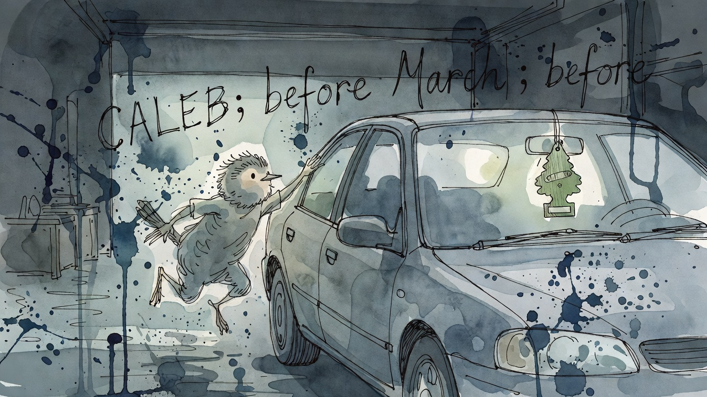
She thinks: *He is building something. He is the Emperor. He is in control of this room.*
She walks back through the garage, past the car that still smells faintly of the air freshener Caleb hung from the rearview mirror in April — March, she corrects. Before March. Before. — and into the kitchen where the light is on, the overhead light, the one that has been on since eleven-forty-seven on a night she has already turned into a tower. It buzzes. It has always buzzed, but she hears it now.
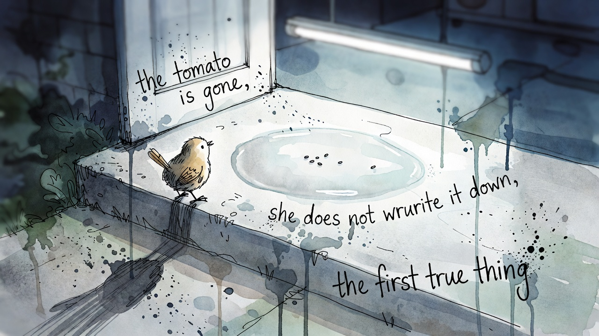
The tomato is gone from the back step. She checks. The step is bare, a faint wet circle where it sat. Her mother took it, or a bird did, or it rolled into the grass. She does not know which, and she does not write it down, and the not-writing feels like the first true thing she has done all day, so she stands in the kitchen under the humming light and lets it be.
Bicycle Lovers
The street was Rowan Lane and the light was the last of it.
She remembers this. She has always remembered this — the way September evenings in that part of town went gold at the edges, the sun catching the upstairs windows of the Burkes' house so they blazed like something holy, and the pavement still warm under her bare feet because her mother had said *put on shoes* and Caleb had said *she's fine* and that had been the end of it. She was seven. The bicycle was too large. It had been Caleb's first, a hand-me-down from a cousin in Galway, blue with a rust spot on the crossbar and a bell that didn't ring so much as click, a flat dead sound like a tongue against teeth. The seat was set too high. Her feet did not touch the ground.
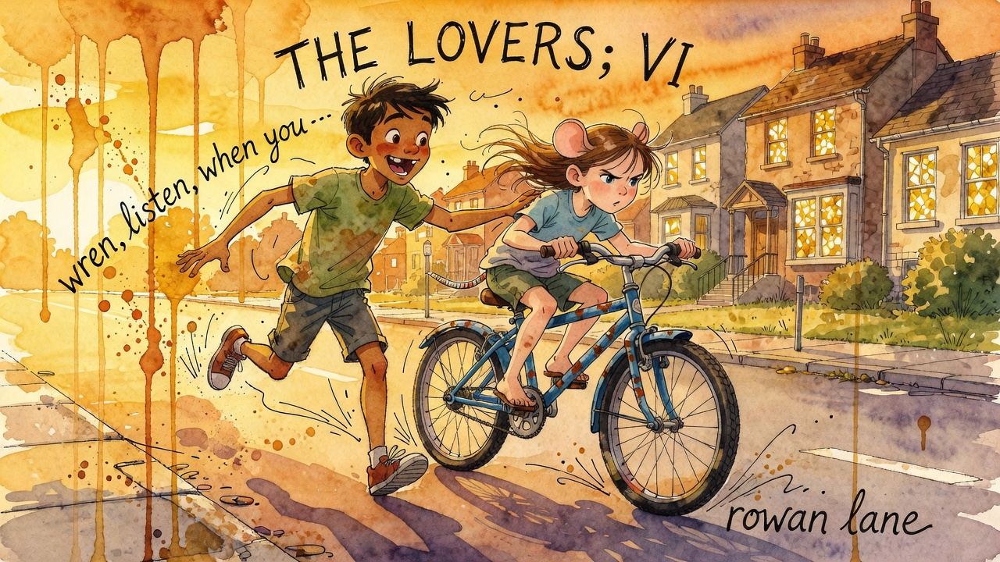
She writes this now, in the kitchen, under the light that hums. She writes it the way it deserves to be written.
*The Lovers. Card Six. Two figures in a garden, and above them a third — the angel, the witness, the one who sees what they cannot: that the bond between them is not a thing they chose. It was given. It was the shape of the world before they arrived in it.*
She pauses. Reads it back. The prose is good. She knows it is good. She keeps going.
*He ran behind me. The street was Rowan Lane and the light was gold and I was seven years old on a bicycle I could not ride, and my brother's hand was on the small of my back.*
His hand. She can feel it now — the flat of his palm between her shoulder blades, the pressure steady, not pushing but holding, the way you hold a glass you are carrying across a room. He was twelve and already tall, already the version of himself she would remember most clearly: skinny, sun-darkened, his dark hair in his eyes because he refused to let their mother cut it. He ran behind her in a faded green t-shirt and his breath came in short happy bursts and he said things — she cannot remember all the things he said, but she remembers the sound of them, the way they tumbled out like he was narrating a race.
*Go go go, Wren, you've got it, don't look down, look at the end of the street, look at where you're going—*
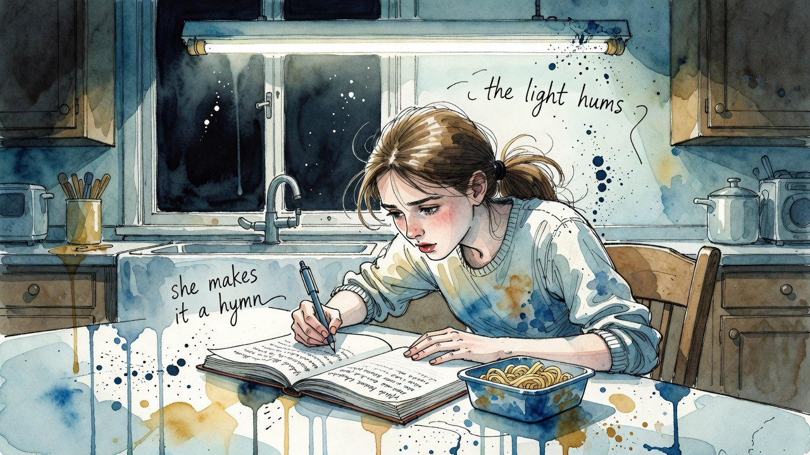
She writes it in the notebook. She makes it a hymn.
*The Lovers do not look at each other. They look at the road. His hand held me upright and I did not know I was riding because I thought his hand was the thing keeping me alive, and it was, and then it wasn't, because—*
Because he let go.
She was halfway down Rowan Lane. The Burkes' windows were blazing. A dog — not Sam, some other dog, a terrier, the Clearys' — barked twice from behind a gate. The warm pavement scrolled beneath her and the pedals turned under her feet and his hand was there, solid and constant, the center of the world, and then it was not.
She did not fall.
That was the thing. That was the whole thing, the miracle of it, the part she has carried with her like a stone in her pocket for nine years: she did not fall. She rode. The bicycle moved beneath her and she moved with it and the street opened ahead of her, endless, gold, and behind her she heard him — not his hand now, just his voice, getting smaller, getting farther away, and he was laughing.
She looked back. He was standing in the middle of Rowan Lane, ten feet behind her, twenty, his arms at his sides, grinning so wide she could see the chipped tooth — the one from the bike crash when he was her age, the one their mother called *your souvenir* — and the low sun caught him full in the face and he was the most beautiful thing on the street, more beautiful than the windows, more beautiful than the light, because he had let go and she was still upright and he knew. He had known before she did.
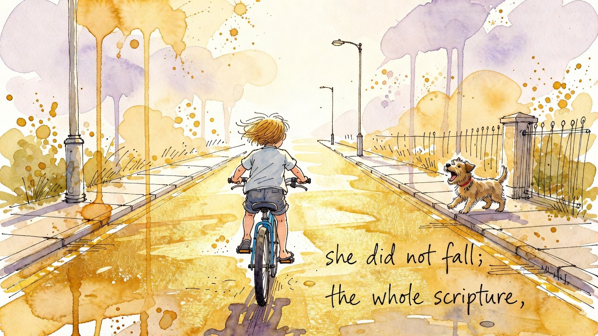
*Wren, listen, when you—*
She writes the sentence. She has written it before — first chapter, a mention, a thread she left loose because loose threads are what pilgrims leave, aren't they? Proof they passed through. But now she gives it the full scene. Now she sets it in the evening light where it belongs.
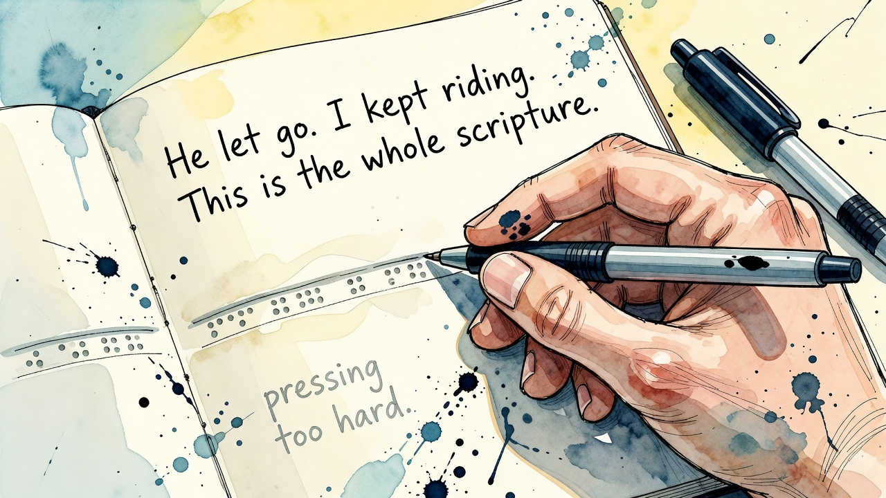
He called it after her. She was still riding, still pedaling, the bicycle wobbling slightly as she turned to look back, and he cupped his hands around his mouth even though the distance was nothing, even though she could hear him fine, and he shouted it like it was the most important thing in the world—
*Wren, listen, when you—*
A car horn. Not on Rowan Lane — somewhere else, a street over, two streets over, some impatient driver leaning into the sound. It cut across his voice and she turned back to the road because the bicycle was wobbling and her hands were tight on the grips and by the time she looked back again he was running to catch up, and the sentence was gone. He never finished it. She got to the end of the street and he caught her and grabbed the handlebars and they were both laughing and out of breath and the light was going, the windows cooling from gold to grey, and she said *what were you going to say?* and he said *what?* and she said *you were saying something, when you—* and he said *oh, nothing, forget it,* and swung his leg over the crossbar and rode the bicycle back up the street standing on the pedals, weaving, his shadow long and thin on the pavement.
He did not say it again.
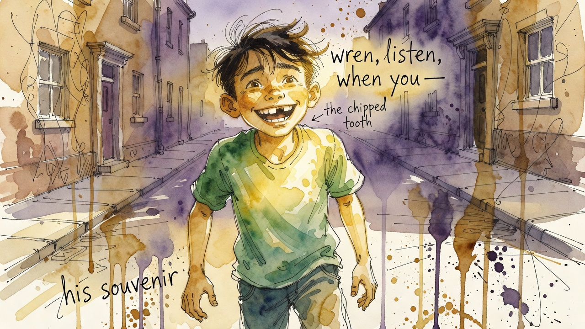
Wren stops writing. Her hand aches. She has been pressing too hard — the pen has left a groove in the page beneath, a ghost sentence on the next leaf, and she runs her thumb across it and feels the dent of the words she chose. The kitchen light hums above her. Outside the window the real September evening is going dark, not gold, not like Rowan Lane, just dark, the way evenings actually go when you are not writing them into something better.
She reads the page back.
It is the most beautiful thing she has written. The prose lifts. The sentences know where to land. Caleb is alive in it — not the Caleb of the coroner's report or the Caleb of his folded-wrong hands or the blue she has not told anyone about — but the real Caleb, the twelve-year-old in the green shirt, the one who let go because he knew she could ride, and the letting-go was the love, not the holding-on. She has made him a hymn. She has set him in amber and the amber is warm and the light inside it is gold.
*The Lovers stand in the garden. The angel looks down. The bond was given before they knew it, and it holds even now, even here, even after the garden is gone.*
She writes the last line.
*He let go. I kept riding. This is the whole scripture.*
And it is beautiful, and it is a hymn, and the hymn does not mention that she has been sitting in this kitchen for an hour and a half and has not eaten the leftover pasta and the light above her buzzes like something trapped and alive. The hymn does not mention that the sentence — *Wren, listen, when you* — has no ending. The hymn makes that a gift. A mystery. A thread that the pilgrim carries. It does not mention that she has lain awake at two, at three, at four in the morning turning that sentence over like a plank of the wrong wood, sanding it, sanding it, trying to hear past the car horn to whatever came next. *When you grow up. When you fall. When you get to the end of the street. When you—*
She does not write this.
She writes instead:
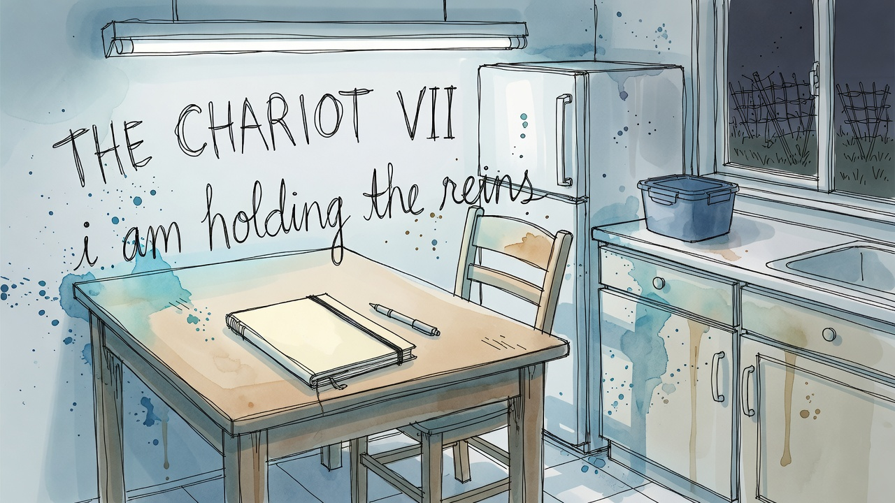
*The Chariot. Card Seven. I have walked six stations and I am ready. The road is beneath my wheels. The Fool set out, the Magician gave me tools, the Priestess gave me silence, the Empress gave me abundance, the Emperor gave me order. The Lovers gave me the scripture of letting go. I am in the Chariot now. I am holding the reins.*
She closes the notebook.
The snap is small and sharp — the elastic band catching the cover, the satisfying click of a thing completed. She sets it on the table, square with the table's edge, and puts the pen beside it, parallel. Done. Six stations walked, six chapters written, and the seventh declared. She is in control of the road. The road is beneath her wheels. She can feel it — the same feeling from Rowan Lane, the bicycle beneath her, the pavement unspooling — and if his hand is not on her back anymore, that is because she doesn't need it. That is because the letting-go was the gift.
She stands. She pushes the chair in. The kitchen light buzzes. Through the window she can see the dark garden, the shapes of the collapsed cages, and beyond them the neighbor's fence where something once snagged and tore — she does not think about this. She is past it. She is in the Chariot.
The pasta is on the second shelf of the fridge, in the blue container, and she does not open the fridge. She is not hungry. She is finished.
She picks up the notebook and tucks it under her arm and walks down the hall toward her room, past the bathroom where the light is off and the door is half-open and she does not look in, does not glance at the shelf above the sink where the cup sits with its two toothbrushes, does not slow down, because she is in the Chariot and the Chariot does not stop for cups or toothbrushes or sentences that have no endings.
She is ready.
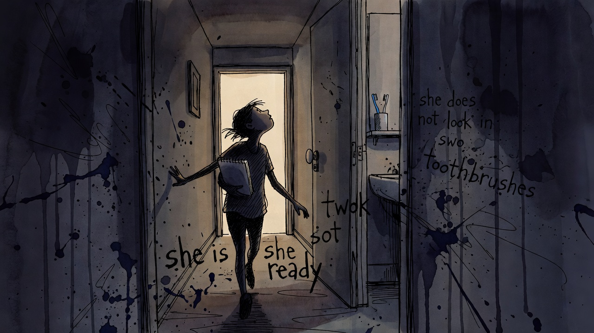
She is so ready.
Parking Lot
The steering wheel is cold.
Not cold the way she would write it — not *the charioteer's hands on the frost-bright reins* or *the chill of iron before battle*. Just cold. Plastic cold. Tuesday-morning-in-October cold, the kind that means the season has turned while she wasn't paying attention and now the car needs a minute to warm up, except she has been sitting here for forty minutes and the engine is off.
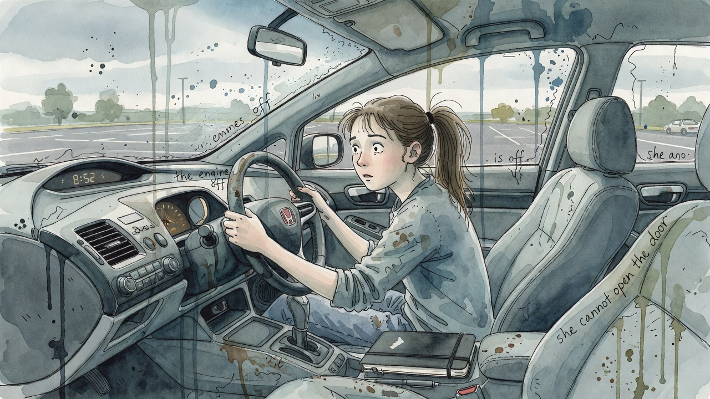
The parking lot is half empty. First bell was at 8:15. She knows this because the dashboard clock said 8:11 when she pulled into the space — third row, end spot, next to the dumpster enclosure because it's the farthest from the main doors and nobody parks here unless they have to — and now the clock says 8:52 and the lot has gone quiet. A few latecomers hurrying across the asphalt with their bags slung wrong. A custodian wheeling a recycling bin. The sky is flat and grey, the kind of sky that doesn't do anything, that just sits there like a ceiling in a room where the light is broken.
She should go in.
The notebook is on the passenger seat. Closed. The elastic band holds the cover down and the pen lies beside it, parallel, exactly where she put it last night before she walked to her room, before she didn't look at the bathroom. She had set them on her nightstand and then picked them up this morning and brought them to the car because — because the pilgrim carries her tools. Because the Chariot moves. Because she is in control of the road.
She tries.
*The Chariot arrives at the gates of — *
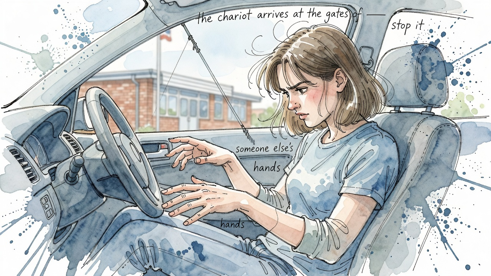
Nothing. The sentence sits in her mouth like a coin she can't swallow. The gates of what. School. Whitmore Regional Secondary. The building is right there, brick and aluminum siding, a portable unit at the east end where Mrs. Khoury teaches chemistry, the flagpole with the halyard clanking in a wind she can hear through the closed window. It is not a gate. It is a parking lot. She is in a parking lot and her hands are on the steering wheel and the engine is off and she cannot open the door.
She is not crying. That's the thing. This would make sense if she were crying — people cry in cars, she has seen her father do it once through the workshop window, his shoulders going wrong, and she had backed away from the glass without breathing — but she is not crying. Her eyes are dry. Her chest is not tight. Nothing hurts. She just cannot open the door.
*The charioteer surveys the field and — *
Stop it.
She takes her hands off the wheel. Puts them in her lap. Her fingers are stiff from gripping — how long has she been gripping? — and she flexes them one at a time, watching the knuckles whiten and release, whiten and release, like someone else's hands attached to her wrists by mistake.
A crow lands on the dumpster enclosure. It doesn't do anything symbolic. It picks at something, finds nothing, leaves.
She reaches for the notebook. Her hand gets halfway across the console and stops. She doesn't pick it up. She looks at it — the black cover, the elastic, the pen aligned to the millimeter — and for the first time since September it looks like what it is: a small notebook on a car seat. Not a grimoire. Not a pilgrim's record. A Moleskine with eighty ruled pages, forty of which she has filled with a handwriting that slopes right when she's trying to sound old and wise and left when she's being herself.
The mythic voice was here last night. She could feel it — the Chariot beneath her, the reins in her hands, Rowan Lane unspooling gold behind her. Where did it go? She tries to find it the way you try to find a word that's on the tip of your tongue, pressing into the place where it should be, but the place is just a parking lot. The asphalt has a crack running through it near the front left tire. A Gatorade bottle lies on its side two spaces over, the blue kind, the lid gone. These are not details that can be made into anything. They are just there.
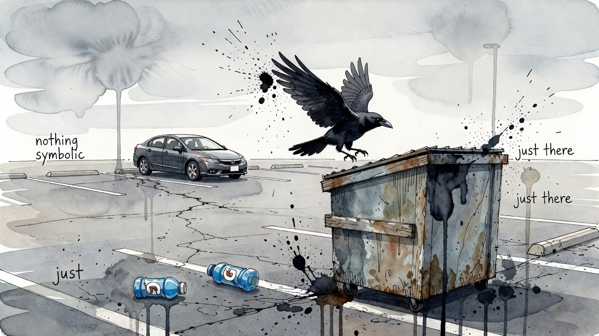
*The road is beneath my wheels.*
The road is a parking lot. The wheels are a 2009 Honda Civic her father taught her to drive in, the rearview mirror held on with electrical tape because she clipped it on the mailbox in April — three weeks after — and he had fixed it without asking how it happened and she had not told him it happened because she was driving home from the cliff at dusk and the road blurred.
She does not want to think about the cliff. She does not want to think about the rearview mirror or the mailbox or the way her father had wrapped the tape so carefully, three neat passes, not looking at her, not asking.
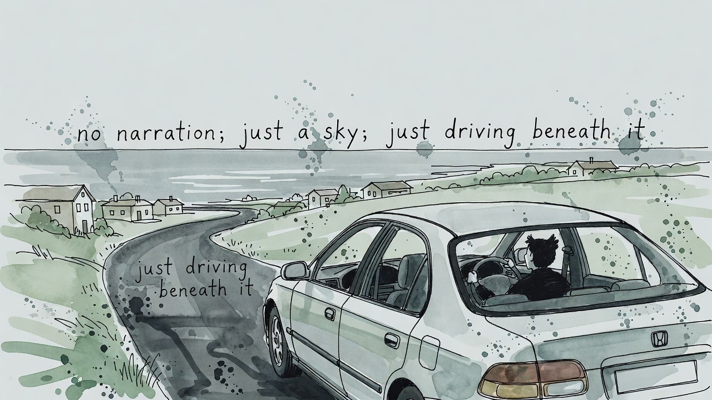
A tap on the window.
Wren's whole body locks. A girl is standing outside the driver's door — Saoirse Brennan, field hockey, AP History, the kind of person who says *hey, how are you?* and means it for exactly the length of the sentence. Her face is close to the glass, one hand cupped to the side, her mouth moving.
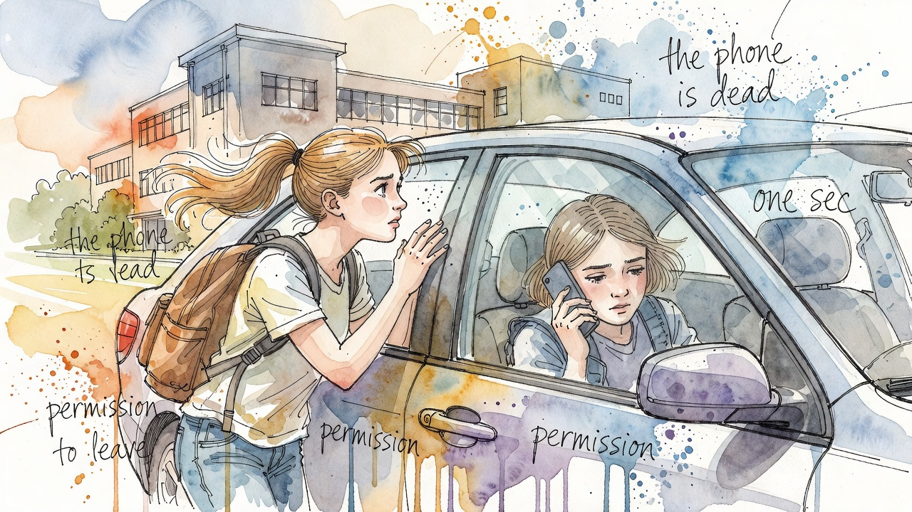
Wren reaches for her phone. It's in the cupholder, dead — she forgot to charge it — but she lifts it to her ear and mouths *one sec* and Saoirse's face does something complicated, part concern and part the relief of being given permission to leave, and she holds up a hand — *okay, whenever* — and walks toward the building, her ponytail swinging, her bag on both shoulders like someone who knows exactly where she's going.
Wren puts the dead phone down.
The lot is empty now. Just her car and the grey sky and the crack in the asphalt and the Gatorade bottle and the clanking halyard and none of it, none of it, is a road. She is not in the Chariot. She is in a Honda Civic in a parking lot and her brother is dead and she cannot open the door.
She waits for the sentence to come — the mythic one, the one that would wrap this moment in gold paper and tie it with a thread she could follow. *The Chariot pauses before the gate. The journey requires — * But the sentence doesn't come. There is no sentence. There is only the sound of the halyard and the weight of her hands in her lap and the notebook on the seat beside her, closed, and she is not going to open it.
She is not going to open it because there is nothing to write.
The charioteer has stopped. The wheels are still. The road she built — six chapters, six stations, the hymn of the bicycle and the scripture of letting go — is behind her and it is beautiful and it is not enough and she does not know what comes after it because after it is just this. A parking lot. A Tuesday. The specific way the heater smells when you turn the key and the engine catches — old dust and something sweet — and the dashboard clock changing from 8:59 to 9:00 with no sound at all.
She turns the key. The engine catches. She does not look at the school. She does not look at the notebook. She puts the car in reverse and checks the rearview mirror — the tape holds, the tape her father wrapped — and she backs out of the space, slowly, carefully, the way he taught her, and she drives across the empty lot toward the exit.
The road home is twenty minutes. She takes it in silence, no radio, no narration, no mythic voice telling her what this means. The houses pass. The coast road bends. The sky stays grey. She drives under it without making it into weather, without making it into anything. It is just a sky. She is just driving beneath it.
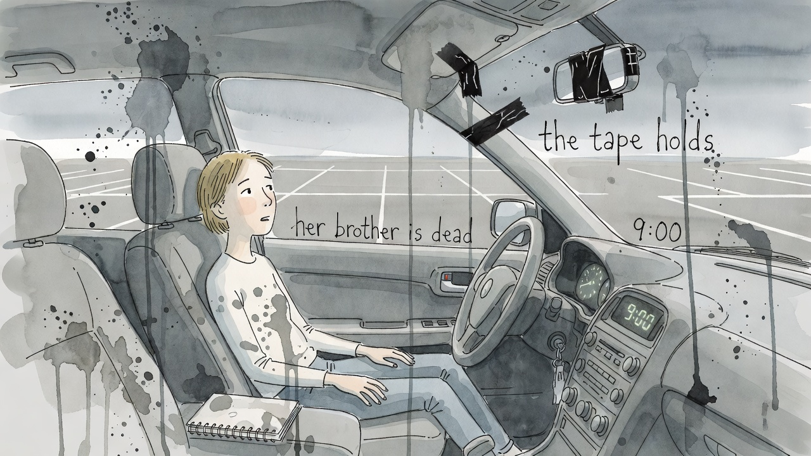
She pulls into the driveway. The house sits there — the front window, the garden, the shapes she knows. The kitchen light is on. She can see it from here, the yellow glow through the side window, still burning, still on from that night six months ago or from this morning or from always.
She turns off the engine.
The notebook is on the passenger seat, and she leaves it there.
She sits in the driveway with her hands in her lap and the engine ticking as it cools and the kitchen light burning in the window and the sky flat and grey above the roof, and she does not narrate this. She does not write it down. She does not make it mean anything.
The first road is over. She can feel it — not as an ending but as an absence, like the moment on Rowan Lane when his hand left her back, except this time she is not riding. This time the bicycle has stopped and her feet are on the ground and the street ahead is just a street and no one is calling after her.
No one is calling after her.
She sits there. The engine ticks. The light burns. After a while, she opens the car door.
Pajamas Fool
The microwave clock says 3:14.
She knows this because it is the only light in the kitchen besides the overhead, and the overhead doesn't count because the overhead has been on since March. The overhead is not a light anymore. It is a fact of the room, the way the ceiling is a fact, the way the linoleum is a fact — the pale green linoleum with the crack near the dishwasher that her father keeps saying he'll fix and then doesn't fix and then stops saying he'll fix, which is its own kind of fixing.
3:14. She is standing at the sink in pajamas that used to be grey and are now the color of nothing in particular. No socks. The linoleum is cold under her feet in a way that is just cold, not a metaphor for anything, and she is holding a glass of water she filled ten seconds ago and has not yet drunk.
She didn't decide to come downstairs. That's the part she can't explain, even to herself — not that she'd try, not now, not without the notebook. The notebook is in the car. She hasn't touched it in four days. It sits on the passenger seat with the pen beside it, the elastic holding the cover shut like a jaw wired closed, and she has walked past the car every morning and not looked at it and not not-looked at it either. It's just there. She's just here.
She was asleep. She was asleep and then she was awake and then she was standing up and then she was walking and now she is in the kitchen at 3:14 a.m. with a glass of water, and the road has started again.
That's the thing she can't stop knowing.
She didn't choose this. She didn't open the book, didn't lay out the cards, didn't pick up the pen and write *Station One: The Fool sets out at the hour the gulls —* None of that. She is just here, barefoot, in pajamas, under the light that has been on since the night two officers stood in this room and said words her mother received on her knees. The light that was on when they left. The light nobody turned off because turning it off would mean the night was over and if the night was over then the morning would come and in the morning he would still be —
She drinks the water.
It tastes like water. It is three in the morning and the water tastes like water and the light is on and she is standing in the exact spot where her mother knelt, more or less, give or take a tile, and she is not kneeling. She is standing. Her feet are cold. The glass has a chip on the rim that she avoids with her lip without thinking about it, the way you step over a crack in a sidewalk, the way you breathe.
Behind her, on the floor between the table leg and the radiator, Henny is asleep.
Henny. The retriever. Twelve years old, grey-muzzled, one ear permanently folded from a puppyhood surgery nobody remembers the reason for. She sleeps in the kitchen because she has always slept in the kitchen, and she does not stir when Wren comes downstairs, and she did not stir when the officers came in March, and she will not stir now. Her ribs rise and fall. Her paws twitch against something she's chasing in a dream — a ball, a bird, a version of the yard that still has a boy in it throwing things for her to fetch.
In the illustration — the one at the front of Aunt Maren's book — the Fool has a small white dog at her heels. Alert, bright-eyed, nipping at the Fool's ankle as if to warn her about the cliff. Wren remembers thinking that was important. The dog as instinct. The dog as the body's animal knowledge pulling the spirit back from the edge.
Henny is not that dog. Henny is twelve and arthritic and she sleeps through everything, and her fur is not white but the dull gold of a coin left in a pocket through the wash, and she is not at Wren's heels. She is on the linoleum, between the table leg and the radiator, breathing.
Wren sets the glass in the sink. The clink is loud in the way that 3 a.m. sounds are loud — not because they're actually loud but because there is nothing else. The refrigerator hums. The baseboard ticks. The light buzzes at a frequency she can feel in her back teeth.
She looks at the light.
It's a flush-mount fixture, the cheap kind — frosted glass bowl with two dead flies in it, screwed to the ceiling with a brass fitting that has gone green at the edge. Sixty watts. Maybe forty now; the bulb is old and getting dimmer, and at some point it will die and someone will have to replace it and that will be a decision someone will have to make: replace it, or let the kitchen be dark.
Not yet.
She leans against the counter. The edge presses into the small of her back — the exact place on a body where a hand goes when you're teaching someone to ride a bicycle, the exact place where the hand lifts away — and she feels the pressure and does not make it into anything. It is just the counter. She is just leaning.
But the word is there. She can feel it the way she felt the mythic voice before it left: a presence in the room, not summoned, just arrived.
*Again.*
Not spoken. Not written. Just — there, the way the light is there, the way Henny is there, the way the crack in the linoleum is there. A fact of the room. She is in the kitchen at 3:14 a.m. in pajamas with no socks and the light on and the dog asleep and the notebook in the car and the road has started again. She did not ask it to start. She did not want it to start. It started anyway, the way March started, the way morning starts, the way you wake up and you are standing at the sink and you don't remember deciding to stand.
*Again.*
She does not write it down.
There is no notebook. There is no pen. There is no *Station Nine* or *The Fool returns at the hour of —* There is no mythic register available to her in this kitchen at this hour, no gold paper to wrap it in, no thread to follow. There is only the light and the dog and the water she has already swallowed and the word she is not saying aloud because saying it aloud would make it a sentence and she is not making sentences anymore.
But the word is true. She can feel that much. She has been here before — not this kitchen, not this hour, but this place. The start of a road. The Fool's first step, except this time the Fool is not wearing a yellow raincoat and carrying a knapsack and turning her face bravely toward the horizon. This time the Fool is in washed-out pajamas with her hair flat on one side from the pillow and a chip in her water glass and her feet cold on the linoleum and her dog asleep and her notebook in the car and her brother dead and the light on, still on, always on.
This is what the Fool looks like when there is no book to put her in.
Henny shifts in her sleep. A small sound — not a whine, not a bark. A settling. The particular exhale of an old dog rearranging herself around her own weight, finding the warm spot again, giving up on the dream rabbit or the dream ball or the dream boy and just lying there, breathing, on the kitchen floor, under the light.
Wren watches her for a long time. Longer than a glass of water takes. Longer than 3:14.
Then she turns and walks back to the hallway, and the light stays on behind her, and the dog stays asleep, and the road is under her feet whether she wants it or not.
First Name
The toast is burning.
She can smell it from the hallway — that particular char, not smoke yet but the moment before smoke, the moment when bread crosses over from golden to ruined and someone has to care enough to push the lever up. The toaster is old. The spring doesn't pop anymore. You have to stand there and watch it or you have to not care, and for a long time in this house nobody has been standing there.
Wren comes around the corner and her mother is at the counter with her back turned, and the toast is burning, and the kitchen light is on.
Still on. Of course still on.
But there is also morning light — thin, grey, the kind that doesn't commit. November light. It comes through the window above the sink and lies across the counter in a pale stripe, and her mother is standing in it, and her mother's hair is wet.
Wren stops.
Not dramatically. She doesn't freeze. She just — notices, the way you notice a door that has been closed for months standing open, the way you notice that the crack in the sidewalk has a weed growing out of it. Her mother's hair is wet. Not greasy-wet, not slept-on-wet. Washed. Shampooed and rinsed and towel-dried and left to hang, dark at the ends where the water still clings, and her mother is wearing her own shirt — a blue flannel, not Caleb's hoodie — and she is watching the toaster with the kind of attention that a person gives to a thing when they have just remembered that things require attention.
The toast is still burning.
Her mother reaches across and pushes the lever up. The bread comes out wrong — one side dark, the other pale, the whole thing slightly warped from the heat. Joanne — her mother — looks at it. Doesn't throw it away. Sets it on the cutting board and picks up the butter knife.
"Morning," her mother says, without turning around.
"Morning."
Wren crosses to the table. The kitchen is exactly the same as it was at 3:14 a.m. — Henny on the floor, the linoleum, the crack, the overhead light buzzing its small dying buzz — except now there is morning, and her mother, and the smell of burnt toast, and these three things rearrange the room so completely that Wren sits down in a chair that she has sat in ten thousand times and feels the back of it against her spine as if for the first time.
Her mother butters the toast. The scraping sound. The butter is cold and doesn't spread easily, so she saws at it, and little shreds of bread come off on the knife, and she keeps going anyway because this is the toast and it is the toast she is making and she will finish it. She cuts it diagonally. Two triangles, one darker than the other. She turns around.
Her face.
Wren hasn't looked at her mother's face in — she doesn't know. Weeks. You can live in a house with someone and not look at their face. You can hand them things and receive things and say *morning* and *the kettle's on* and *I'm going to school* and never once look, because looking means seeing and seeing means knowing and knowing means — something. Something that takes more energy than either of them has had.
She looks now.
Joanne's face is thinner. The skin under her eyes is the grey-violet of a bruise that is almost healed, and her lips are dry, and she has a small cut on her jaw from something — a fingernail, a pillow zipper, the edge of the world. But her hair is wet and her eyes are open and she is holding a plate with toast on it and she is looking back at Wren, and neither of them is saying anything about any of it.
Her mother sets the plate on the table between them. Not in front of Wren. Not in front of herself. Between. She sits down in the chair across from Wren, and she puts her hands on the table, and the table is small enough that if either of them reached forward they could touch the other's wrist, and neither of them reaches.
The toast steams faintly.
"You were up early," her mother says.
"Couldn't sleep."
A nod. No follow-up. Her mother has learned — or maybe has always known, and Wren is only now seeing it — that a follow-up is sometimes a door you close by opening it. *Why couldn't you sleep, are you okay, do you want to talk about it* — each question a small wall going up, each answer a brick. So she nods, and that is all, and the toast sits between them.
Wren takes a triangle. The dark one. She bites into it and the char is bitter on her tongue and the butter is still cold in the center and it is the best piece of toast she has eaten in six months, which is not a thing she will ever say out loud but which is true in the way that cold linoleum at three in the morning is true — in the body, not the sentence.
Her mother takes the other triangle.
They eat.
Henny lifts her head from the floor and looks at them with the glazed interest of a dog who has smelled butter and is performing a calculation, and then puts her head back down because the calculation does not favor movement.
The overhead light buzzes. The morning light lies across the counter. They exist at the same time in the same room, these two lights, and Wren notices that the morning light is winning — not by much, not by force, just by being slightly more present, the way a whisper can be louder than a shout if the room is quiet enough.
Her mother chews. Her jaw moves. Her wet hair drips a single drop onto the collar of the blue flannel and she doesn't wipe it.
Wren finishes her half. Brushes the crumbs from her fingers. Looks at the plate — empty now, just a plate, a few dark crumbs and a smear of butter — and then looks at her mother, and what comes out of her mouth is not planned. It is not a decision. It is the thing that happens when you have been watching a person rebuild themselves crumb by crumb and you see them for the first time not as the structure they hold up for you but as the person standing inside it, tired and upright and there.
"Joanne."
Just that. Her mother's name. Not *Mom*, which is a title, which is a role, which is a thing you call someone when you need them to be something for you. *Joanne.* A name. The name that existed before Wren, before Caleb, before any of this — the name her mother was called by people who knew her as just a person in the world.
Her mother looks up.
Not startled. Not hurt. She looks up the way a person looks up when they hear their actual name after a long time of being called something else — a small, private surprise, like recognizing your own face in a window you thought was someone else's. Her eyes meet Wren's. They are the same grey as the morning. They are tired in a way that is not the old tired, not the March tired, not the collapsed-in-the-garden tired. A new tired. A tired that has washed its hair.
She doesn't correct her.
She doesn't say *don't call me that* or *I'm your mother* or *are you okay?* She doesn't say anything. She just looks at Wren, and Wren looks at her, and the toast is gone and the plate is empty and Henny is asleep and the light is on and the light is also coming through the window and they are both here, in this kitchen, at this table, in the morning, alive.
Neither of them cries. It's not that kind of moment. It is the other kind — the kind that is so small and so ordinary that you could miss it if you were narrating it, if you were writing it down in a notebook, if you were trying to make it mean something larger than itself. It is just a woman and a girl at a table where toast was, looking at each other, and the looking is enough.
*Joanne.*
Her mother reaches forward and brushes a crumb from the table into her palm and closes her hand around it and holds it there, a small fist, and then opens her hand and the crumb is gone, or too small to see, or still there and it doesn't matter.
"More toast?" her mother says.
"No."
"Okay."
They sit. The morning gets slightly less grey. Henny's paws twitch. The overhead light buzzes its dying buzz, and underneath it, coming through the window, the day.
Wren doesn't write any of this down.
Grandmother Hermit
The geraniums are the color of something that has decided to live.
Wren sees them before she sees her grandmother — a row of plastic pots along the porch railing, dirt-dark and cracked, each one holding a fistful of red so brazen it looks like an argument with November. She parks in the gravel drive and sits for a moment with the engine ticking. She didn't call ahead. She drove here on the kind of impulse that comes after a morning of toast and silence and a name said aloud — the impulse to be near someone who will not ask her how she is.
The notebook is on the passenger seat. She doesn't look at it.
She gets out. The air is cold and smells like leaf rot and woodsmoke and something mineral underneath — the sea, three miles east, a fact you can taste here even when you can't see it. Her grandmother's house is small and white and needs painting and has needed painting for as long as Wren can remember, which is a long time, and the porch sags on the left side where a post settled in '09, and none of this is neglect. It's just a house that has been lived in by one person for a long time.
Nan is on the porch. Kneeling. Both knees on a folded towel, her hands in dirt up to the second knuckle, lifting a geranium from one pot and easing it into another. She doesn't look up when Wren's car door shuts. She looks up when Wren's foot hits the third step — the one that creaks.
"Wren."
"Hi, Nan."
Her grandmother looks at her the way she looks at everything — directly, unhurried, the way a person looks when they stopped being in a rush sometime in their fifties and never started again. White braid over one shoulder. Cardigan with the missing button. Hands dark with soil.
"Sit," she says, and tilts her chin at the step.
Wren sits.
The step is cold through her jeans. She pulls her sleeves over her hands and watches her grandmother work. There is a method to it — the old pot tipped, the root ball cradled, the new pot half-filled and waiting — and Nan does it with the economy of someone who has done this particular thing a thousand times and still pays attention to it. She doesn't rush the roots. She doesn't pack the soil. She tucks the plant in and presses the dirt down with her thumbs, firmly, the way you'd press a blanket around someone's shoulders, and then she moves on to the next one.
"You eat?" Nan says.
"Toast."
"Toast isn't food. Toast is bread that gave up."
Wren almost smiles. Almost. The muscles remember the shape even when the feeling behind it is still making up its mind.
Nan finishes the second pot and reaches for the third. This one is smaller, the geranium leggy and overgrown, leaning hard to the left like it's been reaching for light from a window that isn't generous enough.
"Your mother called last night," Nan says.
"She did?"
"Mm. Eleven-thirty. She doesn't usually call that late." A pause. Nan works a root free from the drainage hole. "She sounded better. Not good. Better."
Wren looks at her own hands. The cuticle on her left thumb is ragged where she's been picking at it.
"She washed her hair," Wren says.
Nan nods. Doesn't turn it into more than it is. Doesn't say *oh, that's wonderful* or *see, things are getting better.* Just nods, the way you acknowledge a fact about the weather — it rained, it stopped, the ground is wet.
"Hand me that one," Nan says, pointing to a pot near Wren's hip.
Wren hands it over. Their fingers don't touch but the pot is warm from sitting in the stripe of sun that falls across the steps at this hour, and the warmth passes between them through the clay.
Through the open front door behind her grandmother, Wren can see the living room. The couch with the quilt. The bookshelf. The mantel.
The photograph.
It's been there Wren's whole life — a young man in a collared shirt, dark hair, early twenties, smiling at whoever held the camera with the easy confidence of someone who does not know he will be dead at twenty-three. Uncle Michael. She has never met him. He is a fact of this house the way the sagging porch post is a fact — present, structural, not discussed unless someone asks.
She has been looking at that photograph since she was four years old and she has never, until this moment, understood what it is. Not a shrine. Not a memorial. Just a photograph of a person who lived here once, in the sense that he lived in Nan's life, and who still lives here in the sense that Nan has not asked him to leave.
"Nan."
"Mm."
"Do you still—" She stops. Starts again, smaller. "Michael."
Her grandmother's hands pause in the dirt. Not a flinch. A pause, the way a person pauses when they hear a word they haven't heard in a while and need to let it arrive.
"What about him."
"Do you still think about him?"
Nan looks at her. The look is not soft. It is not hard. It is the look of someone who has been asked this question before, maybe many times, maybe by people who wanted a particular answer, and who has decided a long time ago to give the true one.
"I still talk to him sometimes," Nan says. "He doesn't answer. That's all right."
She goes back to the geranium. Presses the soil. Her thumbs leave small crescents in the dirt.
Wren watches the photograph through the door. Michael's face. The collar. The smile. She tries to imagine Nan at — what, thirty-five? Thirty-six? — getting the call, the same call, the same door, the same world cracking down the center and not having the decency to actually end. She tries to imagine Nan in those first weeks. She can't. She can only see the woman in front of her, kneeling on a towel, repotting geraniums in November because the old pots have gotten too small and the roots need room.
"Does it get easier?"
The question is out before she can shape it, before she can make it sound less like what it is — a sixteen-year-old asking the only person she trusts to tell her whether she will survive this.
Nan sets down the pot. Wipes her hands on her thighs, leaving two dark stripes on the corduroys. Sits back on her heels.
"No," she says.
The word hangs.
"It gets familiar."
She picks the pot back up. "You learn the weight of it. Where to carry it so it doesn't throw off your walk. Some days it's heavier. Some days you forget it's there and then you feel it again and that's worse, for a second, because you think you should have been feeling it all along." She tucks the last geranium in. Presses the dirt. "But you weren't, and that's allowed too."
Wren's throat is tight. She doesn't cry. She is so tired of not crying that the not-crying has become its own weather, a permanent overcast she has stopped noticing.
"Forty years," Wren says.
"Forty-one in February."
"And you're—"
"I'm what?"
Wren doesn't know how to finish. *Okay* is wrong. *Fine* is wrong. *Over it* is so wrong it's almost funny.
"Here," she says. "You're here."
Nan looks at her, and for the first time something moves in her face — not grief exactly, not the performative sadness that other adults put on when Caleb comes up. Something older. Something that has been carried so long it has become part of the carrying.
"I'm here," she says. "So are the geraniums. So is he." She nods toward the door, toward the mantel, toward Michael's photograph. "We manage."
She stands up slowly, one hand on the porch railing, and her knees crack, and she doesn't wince because this too is familiar.
"Come inside. I'm making soup."
***
The soup is potato and leek and it takes an hour and Wren sits at the kitchen table and watches Nan peel potatoes with a paring knife instead of a peeler, the skin coming off in long curling strips that fall into the sink like ribbon. The kitchen is warm. The window is fogged at the edges. The radio is on low — not music, someone talking about the weather off the coast, a small craft advisory, wind out of the northwest.
They don't talk about Caleb. They don't talk about grief. Nan asks about school and Wren tells her about a history paper she hasn't started, and Nan says history is just people making the same mistakes with different furniture, and Wren almost laughs — closer this time, the muscles pulling harder.
The soup goes on the stove. The kitchen fills with the smell of butter and leeks softening in the pot. Nan moves around the stove the way she moved around the geraniums — deliberate, unhurried, sure.
"Set the table," she says. "Bowls are where they've always been."
Wren opens the cupboard. The bowls are where they've always been. Two of them — the blue ones with the chipped rims, the ones she ate cereal from as a child when she and Caleb came here on Saturdays. She sets them on the table. Two spoons. Two glasses of water. She goes back for napkins and Nan says "we're not that fancy" and this time Wren does laugh, a short sound, surprised out of her, and Nan doesn't comment on it.
They eat.
The soup is hot and plain and good in the way that food made by someone who has been cooking for fifty years is good — not showy, not complicated, just right. Wren eats two bowls. Nan eats one and watches her eat the second with the expression of a woman who said *toast isn't food* and has been proven correct.
Outside the window the light is going. November doesn't hold it long. The porch geraniums are out there in their new pots, red against the grey, and Wren can see them through the kitchen window — stubborn, overgrown, alive.
On the mantel in the living room, visible from where she sits if she turns her head, Michael's photograph. The same smile. The same collar. He has been twenty-three for forty-one years and he will be twenty-three forever and Nan has been getting older around him and the geraniums keep needing repotting and the soup keeps needing making and this, Wren thinks, this is what it looks like. Not getting through it. Not getting over it.
Carrying it. The way you carry a bowl of soup across a room — carefully, with both hands, watching your step.
"Stay for tea?" Nan says.
Wren looks at the window. The dark coming down, the geraniums disappearing into it. The drive home will be thirty minutes on the coast road, and her mother will be in the kitchen, and the light will be on, and everything will be the same except she will know something she didn't know this morning, which is that a person can do this for forty-one years and still peel potatoes and still talk to the dead and still set two bowls on the table, and this is not tragedy. This is Tuesday.
"Yeah," she says. "Okay."
Toothbrush Tower
The cup is white ceramic with a chip on the rim where Caleb knocked it with his elbow sophomore year, reaching for the faucet, not paying attention. It holds two toothbrushes. One pink, one blue.
This is not the night the police came.
This is three weeks later. A Thursday. Morning. Wren knows it is Thursday because she checked — she has been checking, recently, because the days have a way of unhooking from their names and floating loose, and she needs them pinned. Thursday. Late October. Seven-fourteen on the microwave when she passed through the kitchen. The light was on. The light is always on.
She came upstairs to brush her teeth.
The bathroom is small. Shared. Was shared. The word tense is a problem she has not solved. The tiles are the pale green of a hospital corridor, which her mother chose fifteen years ago and has regretted for fourteen, and the grout is going dark between them, and the frosted glass window lets in a light that is not warm or cold but simply there, the way institutional light is there. The mirror has a toothpaste fleck on it near the bottom left corner. She hasn't wiped it off. She is not sure whose toothpaste it is.
She is standing in front of the cup.
She does not know how long she has been standing here. The quality of the light through the frosted glass has not changed, which means it has been less than an hour, or it has been exactly an hour and the clouds are the same, or time has done the unhooking thing again and she is still standing here on a Thursday in late October looking at a blue toothbrush.
The bristles are splayed. He pressed too hard. The dentist told him every six months and he never listened and the bristles fanned out like a small exhausted broom and Wren used to make fun of him for it. She'd hold up her own — neat, pink, the bristles still parallel — and say *this is what a toothbrush is supposed to look like* and he'd say *yours looks like it's never been used, Wren, which explains a lot* and she'd throw the cap at him and he'd catch it or he wouldn't and either way the morning was ordinary.
The bristles are still splayed.
This is the part she cannot get past. Not the night, not the officers at the door, not her mother's sound — that sound she has filed under lightning and myth and managed, for now, to hold at arm's length. Not those things. This. This ordinary bathroom, this ordinary cup, this toothbrush that does not know. That is still here with its ruined bristles, waiting to be picked up by a hand that will not come, and the world has not had the decency to destroy itself around this fact. The tiles are still green. The grout is still dark. The mirror still has the fleck. The light still comes through the frosted glass like any other Thursday.
She understood, the night the police came, that something had fallen.
She understands now, in this bathroom, that everything else is still standing.
The house is still standing. The cup is still on the shelf. The two toothbrushes are still in it, pink and blue, touching at the handles the way they have touched since she was twelve and tall enough to reach the shelf without the step stool. The shampoo bottles are still in the shower. His is the green one — tea tree, because he read somewhere that tea tree was good for something, scalp health or focus or some podcast nonsense she mocked him for. The cap is still flipped open. He never closed caps. She used to close them behind him, a small furious tidying, a sister's prerogative.
The cap is still open.
She could close it. She could throw the shampoo away, and the toothbrush, and strip his sheets and bag his clothes and take down the sea chart tacked above his desk and put it all in boxes and the boxes in the garage and then the bathroom would hold one toothbrush, pink, alone in a chipped cup, and the shelf would have a gap where the green bottle was, and the absence would be — what. Neater. Confirmed.
She does not close the cap.
She does not throw the toothbrush away.
She stands there. The light through the frosted glass shifts — so it has been some time, then, some actual time, and her feet are cold on the tiles and she is still in the t-shirt she slept in and downstairs the kitchen light is on and has been on since March and someone, eventually, will have to change the bulb, and what then? What will they do when the bulb that has been burning since the night the news came finally gives out? Will they replace it? Will they stand in the kitchen in the dark and understand that even the light they have been keeping as a vigil will leave them?
Her mother is somewhere in the house. Her father is somewhere in the house. She can hear the low hum of the radio from the kitchen — not music, talk, someone talking about nothing — and the occasional creak of a floorboard that means one of them is moving through a room, doing the things that living people do in a house that has not been destroyed.
This is what the Tower is, she thinks. Not the falling. The still-standing-after.
The Tower in the book — Maren's book, the illustrated one with the gold edges that she has been carrying like a map — the Tower is always the moment of collapse. Lightning. Figures in the air. The crown blown off. But that's wrong, or it's only half right, because the worst part of the Tower is not the moment it falls. The worst part is the morning after, when you come downstairs and the kettle still works and the bread is still in the bread bin and you make toast and eat it and the toast doesn't know. Nothing in the house knows. The world has sustained a wound that should have killed it and instead it just — continues. Ordinary. Ordinary. The green tiles. The fleck on the mirror. The splayed bristles.
*Wren, listen, when you—*
She flinches. Not at a sound. At the sentence, the one that comes back, the one that has no ending, the one she hears in his voice at the edges of rooms. She doesn't finish it for him. She has never been able to finish it for him. She just hears it start and then the silence where the rest should be, and the silence is the shape of the chip in the cup, the shape of the open cap, the shape of every small thing in this house that is still waiting for him to come back and close it.
She picks up her toothbrush. The pink one.
She puts toothpaste on it. She brushes her teeth. She does this standing in front of the cup that holds his toothbrush and hers, and she watches herself in the mirror — face puffy, hair flat on one side from sleeping, the faint blue-grey under her eyes that has become permanent — and the blue toothbrush is right there, right below her hand, its splayed bristles pointing in four directions like a compass that has lost its bearings, and she brushes her teeth around it.
She spits. Rinses. Puts the pink toothbrush back in the cup.
The two handles touch.
She leaves the bathroom. The light through the frosted glass is the same. The house is the same. Downstairs the kitchen light is on and someone is making toast and the radio is talking about the weather, a small craft advisory, wind out of the northwest, and she goes down the stairs and she does not throw the toothbrush away and she will not throw the toothbrush away and the Tower is not the falling.
Wheel Tuesday
The gas pump clicks off at $31.42 and the song is already playing.
She doesn't register it at first. It comes in under the ordinary noise of the station — the mechanical thunk of the nozzle, a truck idling at the diesel island, the electronic ding of someone entering the convenience store — and for three or four bars it is just a song on the radio of the car behind her, a grey Camry with the windows down, and then the hook comes in and her hand is still on the pump handle and it is Caleb's song.
Not his song. A song he played. There is a difference. He played it in the car with the windows down and his elbow out and he sang the chorus wrong every time, the same wrong words, and she corrected him once and he kept singing them wrong on purpose after that because that was the kind of brother he was — the kind who turned your correction into his joke and made you laugh at both.
She can hear him singing the wrong words now.
She does not take her hand off the pump. The nozzle is already clicked off, the tank full, but she stands there with her hand on the black rubber grip and the song plays from the Camry and she looks at the digital readout — $31.42, 9.783 gallons — and she reads the numbers twice, three times, because if she is reading numbers she is not hearing the chorus. $31.42. Nine-point-seven-eight-three.
The song ends. Another song starts. She pulls the nozzle out and hangs it back on the cradle and screws the gas cap on and gets in the car and sits there with the engine off and her hands at ten and two on the steering wheel.
Tuesday. It is Tuesday. She checked this morning and it is Tuesday and the fact of its being Tuesday is both meaningless and necessary, a pin in the floating days, a small flag planted in the current that says *you are here*.
She is here. Gas station on Harbor Road, the one with the lopsided awning and the ice machine that hasn't worked since August. Caleb used to buy bags of ice from this machine for parties she was not old enough to attend. She is not thinking about that. She is thinking about groceries. She needs — her mother asked her to pick up a few things. Bread. Milk. Dish soap. Her mother wrote the list on the back of a receipt and handed it to her with both hands, like a diploma, like the act of writing *dish soap* on a CVS receipt was its own small graduation back into the world.
The list is in her jacket pocket. She touches it through the fabric.
She drives the four blocks to Kessler's.
***
Kessler's is the small grocery, the one with the produce section that smells like wet cardboard and the front wheels on every cart that pull to the left. It is 4:17 on a Tuesday afternoon and the store is almost empty — one woman in athletic wear studying yogurt labels, a stock boy with headphones wheeling a dolly of canned goods, the cashier leaning on her elbows reading something on her phone. The fluorescent lights are the color of headaches. The floor is beige linoleum with a long scuff mark near the entrance that has been there since Wren can remember.
She gets a basket. Not a cart. A basket says *this will be quick, I am in and out, I am a person with a list and a purpose and I am not going to stand in any aisle longer than I need to*.
Bread. She finds the bread. The brand her mother always buys, the one in the blue bag with the wheat sheaf, and she puts it in the basket. Milk — two percent, always two percent, Caleb used to drink whole milk straight from the carton and leave it on the counter and—
Two percent. In the basket.
Dish soap. Aisle six. She walks down aisle six and the dish soap is where it always is and she picks up the green bottle and puts it in the basket and that is the list. That is everything on the list. She could leave now. She could go to the register and pay and drive home and carry the bags in and put the milk in the fridge and the bread on the counter and the soap under the sink and it would be a completed errand, a thing she did on a Tuesday, evidence that the wheel turns and she is on it.
She does not leave.
She walks to the cereal aisle. She did not mean to. Her feet take her there the way they take her to the bathroom shelf with the two toothbrushes, the way they take her down the hall past his closed door — not by decision but by the body's own geography, the map that has not been updated.
The cereal aisle is bright. Fluorescent bright, bright as an interrogation, every box lit up in its primary color — red, blue, yellow, green — like a children's alphabet of plenty. She walks halfway down and stops.
The yellow box is where it always is. Third shelf, right side, between the granola clusters and the off-brand bran flakes. It is the kind with the honey and the oat clusters that Caleb ate every morning for three years, two bowls back to back, the milk going gold at the bottom, and he'd drink the milk from the bowl like soup and set it in the sink without rinsing and she could always tell which bowl was his because of the residue, the sticky golden film.
She picks up the box.
It weighs nothing. Twelve ounces, maybe fourteen, light as a small book, and she holds it with both hands in the fluorescent glare and looks at the cartoon sun on the front, the one with the grinning face, and the sun is grinning the way it grinned on every Tuesday Caleb reached for this box, and on every Wednesday, and every Thursday, and the box doesn't know. The box is the toothbrush. The box is the kitchen light. The box is every object in the world that is still here because objects don't get the news.
She puts it back on the shelf.
She adjusts it so the front faces out, the way the stock boy would want it, neat and sellable. She stands there. She looks at it on the shelf. Then she picks it up again.
She does not know why she picks it up again. She is not going to eat it. Her mother did not ask for it. No one in the house will open this box and pour two bowls back to back and drink the gold milk from the bottom. She is holding a box of cereal in the fluorescent aisle of Kessler's on a Tuesday in November and she is holding it with both hands like it weighs more than it does because it does weigh more than it does, it weighs exactly what a Tuesday weighs when the wheel has come around to the same shelf and the same yellow box and the same grinning sun and nothing has changed and nothing will change and the wheel is not going anywhere, it is just turning, and she is on it, and she cannot get off.
"You okay, sweetheart?"
The woman from the yogurt section. Athletic wear, ponytail, a cart with a toddler in the seat chewing on a set of plastic keys. She is looking at Wren with the particular softness of a stranger who has noticed someone standing too long in a grocery aisle and has decided to be kind about it.
Wren looks at her.
"Yes," she says. "I'm fine."
She means it. She means about sixty percent of it. She is fine in the sense that she is standing and speaking and holding a box of cereal and the fluorescent lights are on and the floor is beige and the scuff mark is near the entrance and none of this has been destroyed. She is not fine in the sense that the wheel keeps turning to this shelf and this box and this grinning sun and she keeps arriving here without deciding to and departure is not among the options.
The woman nods. The toddler drops the keys. The woman bends to pick them up. By the time she straightens, Wren has put the cereal in the basket.
She goes to the register. She pays. The cashier scans the bread, the milk, the dish soap, the yellow box. $14.27. Wren watches the cereal slide down the belt and into the bag.
In the car, in the parking lot, she sits for a minute with the bags on the passenger seat. The notebook is there too — the Moleskine, the one she hasn't opened since the parking lot at school, the one that has been riding in the car like a passenger she no longer speaks to. She picks it up. The pen is still clipped to the cover.
She opens it. The last entry is from weeks ago, the handwriting careful and mythic, a voice she does not recognize as hers anymore. She flips to the next blank page.
She writes one line.
*the wheel doesn't go anywhere*
She closes the notebook. She puts it back on the seat. Outside the windshield a kid crosses the parking lot holding a red kite by its string, dragging it behind him on the asphalt, the kite's tail scraping the ground because there is no wind and the kite is just a thing made of plastic and sticks, not flying, not meaning anything, just being dragged by a kid across a parking lot on a Tuesday.
She starts the car.
Justice Coroner
The desk lamp is on in her father's office.
She can see it from the hallway — a thin stripe of warm light under the closed door — and she almost walks past. It is after ten. Her mother is upstairs. Her father is not in the office; he is in the workshop, has been in the workshop since dinner, and the sound of sandpaper on wood comes through the house in slow, rhythmic strokes like something breathing.
She stops at the door.
The lamp is the green-shaded one, the banker's lamp, the one that sat on his desk when they moved here and will sit on his desk until they leave. He must have forgotten to turn it off. He forgets things now — the stove, the porch light, words mid-sentence. He starts to say something and the sentence drifts and he picks up a tool instead. It is not the same as her mother's silence. Her mother's silence has a shape; her father's has a leak.
Wren opens the door.
The office is small. Filing cabinet, bookshelf, the desk, a calendar on the wall still turned to August. The green lamp throws a circle of light across the desk surface and everything beyond it falls into brown shadow. It smells like sawdust and old paper and the particular staleness of a room that is entered but not inhabited — a room someone passes through on the way to somewhere else.
She is not here for a reason.
She is here because the light was on and the hallway was dark and the sound of sandpaper was rhythmic enough that she knew he would not come upstairs for another hour at least. She is here the way she was in the cereal aisle — her feet carrying her to a place the rest of her has not agreed to visit.
The desk is neat. Her father keeps it neat the way he keeps the pegboard neat, everything squared and aligned, the order of a man who needs at least one surface in the house to make sense. Pen cup. Stapler. A short stack of mail he has not opened. And the drawer — the right-hand drawer, the deep one, the one with the lock that has never been locked because the key was lost years ago.
She knows the report is in there.
She has known since October, since the morning she heard her parents talking in the kitchen before they knew she was awake. Her mother's voice flat, asking if they should show it to her. Her father's voice saying *not yet*. Her mother saying *she'll find it anyway*. Her father saying nothing, which was his way of saying *I know*.
She pulls the drawer open.
It slides out with a gritty sound, runners that need waxing. Inside: a folder of tax documents, a warranty for the lawn mower, a yellowed envelope with her grandmother's handwriting, and beneath all of it, a manila folder with no label. She lifts it out. It is thin — three pages, maybe four. She can feel them through the cardboard. Three or four pages for a life that ended.
She sits on the floor.
Cross-legged, the folder in her lap, the desk lamp above her throwing its circle just past her shoulder so she has to tilt the page to catch the light. The carpet is the same industrial grey it has always been. There is a coffee stain near the filing cabinet that predates them. She opens the folder.
The first page is a cover letter from the county medical examiner's office, addressed to her parents. It is dated April 14. Six weeks after. She scans it — *enclosed please find*, *our sincere condolences*, *should you have any questions* — and sets it aside.
The second page is the report.
It is a form. Boxes and lines and a typeface that belongs to parking tickets and tax returns, the bureaucratic ordinary of a document that does not know what it contains. She reads it the way she read the gas pump numbers — carefully, each word given its own weight, because if she reads slowly she can keep it at the distance of information.
Name. Date of birth. Date of death. March 7.
Manner of death: Accident.
Cause of death: Drowning.
She has known this. She has known drowning since the night the police came, since the word entered the house like weather and never left. But the report does not say *drowning* the way people say it — soft, vague, a word that floats. The report says it in a paragraph at the bottom of the form, in plain clinical language that she reads once and then reads again.
Cold water shock. Involuntary gasp reflex upon submersion in water below fifteen degrees Celsius. Rapid incapacitation of the limbs. Estimated time of submersion before loss of consciousness: sixty to ninety seconds.
Sixty to ninety seconds.
She reads this number the way she read $31.42. Twice. Three times. She reads it until it is just a number and then she reads it once more and it is not just a number, it is the space between pulling the nozzle from the pump and screwing the gas cap back on, it is the time it takes to walk from the bread aisle to the cereal aisle, it is nothing, it is a minute and a half, it is the length of the chorus of a song he sang with the wrong words.
She does not cry.
She sits on the floor of her father's office with the manila folder open in her lap and the page tilted to catch the desk-lamp light and she does not cry because the information has entered her the way the cereal box entered her basket — not with grief but with weight, a thing she is now carrying that she was not carrying before, and the carrying does not look like tears, it looks like sitting very still on a grey carpet in a cone of green light and breathing.
The third page is a diagram. An outline of a body — generic, sexless, the kind of outline on a medical chart — with marks indicating external findings. Abrasion, left forearm. Contusion, right temple. She stares at the outline. It does not look like Caleb. It does not look like anyone. It is a shape on a page, and the marks are small and clinical, and she thinks: *he hit something on the way in*. A rock. The cliff face. Something under the water. He hit something and then the cold took him and it was sixty to ninety seconds and then it was done.
She closes the folder.
She sits with it in her lap for a while. The sandpaper sound has stopped. She listens for footsteps on the stairs and hears nothing — just the house settling, the hum of the refrigerator, and somewhere behind a wall, the faint tick of a pipe cooling. The kitchen light will be on. It is always on.
She thought this would be different. She thought reading the report would be like the toothbrush — a collapse, a Tower, the floor dropping out. But it is not a Tower. It is a scale. She put something on one side — the not-knowing, the soft vague drowning, the word that floats — and on the other side she has put this: cold water shock, sixty to ninety seconds, abrasion left forearm, contusion right temple. And the scale does not tip. It holds. Both sides are level and she is not resolved, she is not at peace, she is just — informed. She knows a thing she did not know before and the knowing has not changed the weight of the not-understanding. Knowing is not the same as understanding. She understands this now, which is its own small useless justice.
She opens the folder again. She looks at the diagram one more time — the generic body, the marks, the clean lines of a form that does not know her brother had a chipped front tooth and a knapsack and an unfinished sentence — and she closes it.
She puts the report back.
She places it beneath the warranty, beneath the tax folder, exactly where it was. She aligns the edges. She slides the drawer shut with the same gritty sound and she stands and she turns off the desk lamp and the room goes dark and she leaves the door the way she found it — closed, the stripe of light now gone.
In the hallway she stands for a moment. The sandpaper starts again downstairs, faint and steady. Her father is sanding. He is sanding the same plank he has been sanding since March, the one that is the wrong wood for whatever he said he was building, and the plank gets thinner and the project has no name and he keeps sanding because this is what his hands know how to do when the rest of him does not know anything.
She goes to her room. She does not write it down. There is nothing to write. The notebook is in the car and she does not go to the car and even if she did she would not open it because this is not a thing that becomes truer by being recorded. It is already true. It was true before she read it. The report did not make Caleb more dead. It made the death more specific, and specificity is not the same as meaning, and meaning is not the same as sense, and sense is not what she is going to get.
She brushes her teeth. The blue toothbrush is still in the cup. She brushes her teeth around it the way she has every night since the morning she found it, and she rinses and she spits and she does not look at it and she does not not-look at it. It is there. She is here. The scale holds.
White Space
The ceiling has a water stain shaped like a country.
Not a country she can name. Something landlocked, with a coast that isn't a coast — just the edge where the stain stopped spreading. It is above her bed and to the left, between the overhead light she has not turned on and the corner where the wall meets the ceiling and the paint has cracked into a delta. She has looked at it before. She has never looked at it like this — for this long, with this much of her attention, the way you look at something when looking is the only verb your body will conjugate.
It is Saturday.
She knows this because she knew it when she woke up and because nothing has happened since to make her doubt it. The light through the curtain was grey when she opened her eyes and it is grey now, a different grey, which means time has passed, which means she is not dead, which is information and not much else.
She is lying on top of the covers. She is wearing yesterday's jeans and a sweatshirt that is hers, not Caleb's, not her mother's, just hers, and her socks are the thick wool ones with the hole in the left heel and she can feel the sheet through the hole like a cool finger against her skin. Her arms are at her sides. She is not curled up. She is not dramatic. She is lying flat on her back the way a person lies on an examination table, except no one is examining anything.
The house makes sounds. The refrigerator hum. A pipe somewhere. Her father's footsteps cross the kitchen below her and stop and cross back, and a cabinet opens and closes, and then the back door, and then nothing. Her mother's voice, later — or maybe not later, maybe before, time has become an issue — calling something up the stairs that might be her name or might be a question or might just be the sound a house makes when it has people in it.
She does not answer. She does not not-answer. She just doesn't, and the silence after is the same silence as before, and the house absorbs it the way houses absorb everything.
She is not sleeping.
She wants to be clear about this, although there is no one to be clear to. She is not sleeping and she is not crying and she is not having a breakdown. She is lying in her bed on a Saturday and looking at a water stain and this is what she is doing. It is the whole of what she is doing. There is no second layer, no underneath. The water stain is shaped like a country and the country has no name and she is in it.
At some point the light shifts.
The grey becomes a slightly warmer grey and then, briefly, there is a stripe of something almost gold along the far wall where the curtain gap lets the afternoon through. It moves. She watches it move. It crosses the bookshelf and touches the spine of a paperback she has not read and moves on. She does not think about what the light means. She does not think it is a metaphor. It is light and it is moving and she is watching it, and this is still Saturday, and the country on the ceiling is still there.
Her stomach makes a sound. She notes it. She does not get up.
She is not refusing food. She is not performing anything. She is just not getting up. The distance between the bed and the kitchen is not far but it is vertical and then horizontal and it involves the hallway and the stairs and the kitchen light — on, always on — and her mother maybe at the table and a conversation she would have to have or carefully not have, and all of those things are real things that exist in the world and she is not in the world right now, she is in the country on the ceiling, which asks nothing.
The dog comes.
She hears the click of nails on the hallway floor first, then the nudge of nose against the door she left unlatched, and then the heavy, sighing weight of Henny settling herself across Wren's feet as if this is where she has always been going. Henny is old and her muzzle is white and she smells like the blanket in the living room and slightly like the rain that must have come while Wren was looking at the ceiling. She arranges herself with the slow precision of a dog who has done this many times — the circling, the collapse, the groan — and then she is still, and her weight on Wren's feet is warm and certain and Wren does not reach down to touch her because reaching is a verb and she is not doing verbs, she is doing the ceiling, but the weight is there, and it holds her feet to the bed the way an anchor holds a boat, not cruelly, not even firmly, just enough.
The stripe of gold is gone. The light is grey again, a later grey, an almost-evening grey. The water stain has not moved. Countries don't.
Henny breathes on her feet. Each exhale is warm and damp through the wool socks. Wren counts three of them and then stops counting because counting is a kind of effort and effort is not what this day is for.
This day is not for anything.
That is not a tragedy. That is just Saturday, and Saturday will end, and Sunday will come, and eventually she will stand up and go to the bathroom and come back and maybe eat something or maybe not, and the water stain will still be there, and Henny will still be on her feet or she won't, and the light will have changed again because that is what light does.
The afternoon moves across the wall one more time — thinner now, the last of it — and then it is gone, and the room is the same room, and she is in it.
Blue Lips
Carpet cleaner and lilies.
That is what the funeral home smelled like, and she has never said this to anyone because no one has asked the right question. People asked how she was. People asked if she needed anything. No one asked what it smelled like, and so she has carried the answer for nine months in the place behind her sternum where useless information lives, where it has calcified into something hard and smooth like a river stone, and now she is going to set it down.
Not because she is ready. She does not know what ready would feel like. She is going to set it down because she got up off the bed and came downstairs and the kitchen light was on — on, always on — and the house smelled like toast and dish soap and for one half-second she was back in that room with the lilies and the carpet and the particular hush that a building makes when its entire purpose is to hold still things.
So.
The carpet was green. Not a green that exists in the world — a green that someone chose from a swatch book because it was meant to be calming, or neutral, or invisible, and instead it was the most visible thing in the room because everything else was so carefully not-visible. The chairs were beige. The curtains were beige. The tissues in the box on the side table were white with a faint pattern of leaves that she stared at for a long time because staring at the tissue box was easier than looking at the front of the room.
The front of the room was where Caleb was.
She is going to say this plainly because she has tried every other way. She tried the mythic way — the tower, the lightning, the figures falling through clean air — and it was beautiful and it was a lie. She tried not saying it at all, and that was the ceiling and the water stain and the country that asks nothing, and she can't live there. So: plainly.
Caleb was in a casket at the front of the room and he was wearing a dark suit that was not his suit. It was their father's, she found out later. Caleb didn't own one. The jacket was slightly too broad in the shoulders so they'd pinned it somehow at the back where no one could see, but she could see the fabric pulling wrong at the lapel, the way fabric pulls when it's been asked to pretend it belongs to a different body.
His hands were folded on his chest.
This is the part. This is the part she has carried the longest and the most quietly, because his hands were folded wrong. They were stacked left over right, fingers laced, the way you fold your hands in church or at a desk, and Caleb did not fold his hands like that. Caleb did not fold his hands at all. His hands were always apart — one on a book, one reaching for something, one gesturing at a sea chart while the other held a mug, both of them open, always open, and now they were closed and stacked and someone had arranged them that way, a stranger, a person whose job it was to make the dead look like they were resting, and they had folded his hands like a person who had never met him, because they hadn't.
She stood at the side of the casket and looked at his hands and did not touch them. Her mother was somewhere behind her. Her father was somewhere behind her. Aunt Maren was holding someone's elbow. The room smelled like carpet cleaner and lilies and the particular nothing-smell of air conditioning set too cold, and Caleb's hands were wrong, and she did not fix them.
She could have. She thinks about this. She was standing right there and she could have reached in and unfolded his fingers and put his hands the way they actually went — one at his side, one across his stomach maybe, or both open, palms up, the way he slept. She knew how he slept. She'd seen him asleep on the couch a thousand times, one arm trailing off the edge, fingers loose. She knew his hands better than the stranger knew them and she did not fix them and she has not forgiven herself for this and she is not sure she needs to.
The lilies were white. They were on a stand to the left of the casket in a vase that was also trying to be invisible and failing. Someone had sent them. There was a card she did not read. The lilies were the kind that have the dark orange pollen that stains everything, and she remembers thinking that someone should have cut the stamens off because the pollen would get on the suit — on their father's suit — and then she thought: it doesn't matter. Pollen on the suit doesn't matter. Nothing about the suit matters. And that thought was the closest she came to crying in that room, not the sight of him, not the wrongness of his hands, but the pollen, the stupid pollen, the realization that no one would ever need to clean that suit again.
She did not cry.
His lips.
She has not told anyone about his lips. Not her mother. Not her father. Not the grief counselor the school sent her to twice before she stopped going. Not the notebook, even in the mythic days when she was writing everything down in her best borrowed voice. His lips she has kept entirely for herself, and keeping them has cost her something she cannot name, a tax paid in a currency she didn't know she was spending.
They were blue.
Not the blue of the sky or the sea or anything that belongs to a metaphor. Not the blue of his toothbrush in the cup. A specific, particular blue: the grey-blue of a mussel shell. That blue. The blue that is almost purple at the edges and almost nothing at the center, the blue that is not a color the living come in. The makeup had been applied over it and she could still see it underneath, the way you can see a bruise through foundation, and she understood in that moment that the person in the casket was not her brother, not because of anything spiritual or philosophical but because her brother was not this color. Her brother was sunburned forearms and a chipped tooth and wind-red ears in winter. Her brother was not the grey-blue of a mussel shell. That color belonged to a different state of matter entirely, and she was looking at it, and no one else in the room seemed to see it, and she has carried it alone since March.
She is not carrying it alone now.
She does not know who she is sharing it with. The kitchen, maybe. The light — on, always on. The toast smell and the dish soap and Henny's nails clicking behind her somewhere in the hall. Maybe the notebook, if she could find it. Maybe not the notebook. Maybe just the air in this room, which is warm and smells like a living house and is not the funeral home, which is the point, which is the only point.
She says it out loud. Not to anyone. To the kitchen.
"His lips were blue."
Henny's nails stop clicking. The fridge hums. The kitchen light buzzes its faint, permanent buzz.
"Like a mussel shell."
The words are in the room now. They are in the air that smells like toast. They are not lighter for having been said — that is not how it works, she is learning that is not how any of it works — but they are shared, they are in a room that is not the room behind her sternum, and the difference between those two rooms is that this one has a door she can walk out of.
She stands at the counter. She does not make toast. She does not sit down. She stands there with her hands open at her sides, palms up, the way Caleb slept, and she breathes, and the kitchen light hums above her, and his lips were blue, and she has said so, and it is still true, and she is still here.
Sandwich Temperance
The turkey is in the back of the fridge, behind a jar of pickles and a block of cheddar going hard at the edges.
She finds it by feel — the slick deli bag, the cool weight of it — and pulls it out and sets it on the counter and stands there looking at it for a moment as though it has asked her a question she wasn't expecting.
It's afternoon. She knows this because the sun is coming through the window over the sink at its winter angle, low and long, striping the counter gold in a way that the kitchen light never manages. The kitchen light is off. She turned it off when she came downstairs — reached for the switch without deciding to, her hand moving ahead of the rest of her, and the click was louder than it should have been, a small mechanical fact that changed the room. The bulb had been on since March. She does not do the math on that. She just notices that the sun is enough, has always been enough when it bothers to show up, and today it has, and the counter is warm where it lands.
Bread. She needs bread.
The loaf is on top of the microwave, twist-tied, the kind her mother buys — whole wheat with seeds that get stuck in teeth. She takes two slices and lays them flat. They are slightly stale at the crust and softer toward the center and she presses one with her thumb and watches it spring back and this is not a metaphor. It is bread.
She finds the mustard. She finds a butter knife in the drawer, the one with the loose handle her father has been meaning to fix since before. She spreads mustard on one slice, mayo on the other, and she does these things in order, without rushing, the way a person makes a sandwich when the sandwich is the only thing happening.
Turkey. Three slices, slightly translucent, folded once.
She thinks about Caleb.
Not the blue lips. Not the casket or the suit or the wrongness of his hands. She thinks about him at this counter, seventeen, making a sandwich at eleven at night after a swim, dripping on the linoleum in his trunks, the fridge door hanging open behind him because he never closed it, building something enormous — salami, turkey, cheese, lettuce, more cheese, pickles, another piece of bread in the middle that he called "structural support." She'd sat on the counter and watched him. She was twelve, maybe thirteen. He'd cut it diagonally and given her the smaller half without asking if she wanted it, and she'd eaten it even though she wasn't hungry, because the sandwich was so ridiculous that not eating it felt like refusing a gift.
She is thinking about this and she is also putting lettuce on the turkey. Two leaves, torn, not cut. She is thinking about her brother alive in this kitchen and she is making her own sandwich and these two things are happening at the same time and neither one is canceling the other out.
This is new.
Or maybe it isn't new. Maybe it has been happening in small moments she didn't let herself notice — the gas station, the cereal aisle, the toast she smelled last night that someone else made. Moments when the grief and the ordinary occupied the same second and she didn't have to choose between them. But she is noticing now. She is standing here with lettuce in her hand and Caleb in her chest and the sun on the counter and all of it is true simultaneously, and she does not owe anyone an apology for this.
She does not apologize to him in her head.
She has been doing that. She sees it now — the quiet, reflexive sorry she has been sending him every time she laughed at something, or slept past nine, or wanted something. Sorry I'm eating. Sorry I'm here. Sorry the world is still going and I am still in it and you are not. She has been genuflecting to his absence every time she did anything that required her to be alive, and she is not going to do that with this sandwich. Not because she has decided to stop — she suspects it will come back, the reflex, the little apology — but because right now, in this specific moment, it is not here, and she is going to let it not be here.
She cuts the sandwich diagonally. She does not add structural support.
She picks up the larger half and bites into it.
The bread is stale enough to resist her teeth for a second before giving way. The mustard is sharp. The turkey is cold and tastes like turkey — like deli meat, like lunch, like the inside of the fridge. She chews. She swallows. She takes another bite.
She is thinking about Caleb dripping on this floor and she is chewing and both things are happening and she keeps chewing.
Henny comes in from the hall, nails clicking, and stands by her feet with the patient, optimistic attention of a dog who has identified turkey. Wren tears off a corner — bread only, he's too old for the rest — and holds it down. Henny takes it softly, the way he takes everything, his grey muzzle gentle against her fingers, and then he lies down on the linoleum in the stripe of sun and sighs the way dogs sigh, with his whole body, as though the floor is exactly where he was always going to end up.
The kitchen is quiet. No hum from the overhead bulb. Just the fridge, and the occasional tick of the baseboard heater, and the sound of her own chewing, which is the least elegant sound a person makes and she does not care.
Her mother comes in.
Joanne stops in the doorway the way she's been stopping in doorways for months — not hesitating exactly, more like checking the weather of a room before entering it. She is wearing her own sweater, not Caleb's hoodie. Her hair is down, clean, pushed behind one ear. She looks at Wren at the counter, at the sandwich, at the knife with the loose handle, and something crosses her face that is not happiness and not sadness and is maybe just recognition. The room is sun and sandwich and her daughter is eating in it.
"There's turkey," Wren says.
Joanne looks at her for a moment longer. Then she nods and crosses to the fridge and opens it and stands in front of it the way people stand in front of fridges, looking at what's there, taking stock.
"Seeds get stuck in my teeth," she says.
"I know."
Her mother takes out the turkey. She takes out the mustard. She pulls two slices of the same bread from the bag and lays them on the counter next to Wren's crumbs, and they are making sandwiches now, mother and daughter, in the sun, and neither of them is saying anything important and neither of them needs to.
Wren finishes the first half. She picks up the second. She bites into it and Caleb is still in the kitchen — not haunting it, just in it the way he always was, leaning against the counter, fridge door open, building his absurd sandwich with both hands. She lets him be there. She lets the sun be warm. She lets the turkey taste like turkey.
Joanne sits down at the table with her sandwich and eats it in small, deliberate bites, and Wren notices that her mother's hands are steady, and that the window behind her is bright, and that the overhead light is off and neither of them has reached for the switch.
The notebook is in the car. She will get it later, or tomorrow, or not. But she knows what she would write if she wrote anything. One line, six words, not a proclamation but a fact:
*Both, at once, is allowed.*
She finishes the sandwich. She brushes the crumbs from the counter into her palm and drops them in the sink. Henny watches from the floor with one eye open, checking for fallout. The sun moves an inch on the counter, the way sun does, the way it will keep doing whether she watches it or not.
Her mother is still eating.
Wren leans against the counter and waits, and does not know what she is waiting for, and this is fine.
Doing Better
Mrs. Clearwater touches her arm outside the post office and says, "You're looking so much better, sweetheart."
Wren is holding a package slip. She is wearing yesterday's jeans and a sweatshirt that smells like the inside of her car and her hair is in the same elastic it's been in since Tuesday, and Mrs. Clearwater is touching her arm with two fingers, light and careful, the way you touch something you're not sure is dry yet.
"Thanks," Wren says.
She says it the way she says everything to adults who touch her arm outside the post office: with her mouth. The word goes out and Mrs. Clearwater receives it and her face does the thing — the small, relieved softening, the exhalation through the nose that means *good, good, she's getting through it* — and then she is gone, and Wren is standing on the sidewalk with the package slip and the specific weight of having been told she looks like something she does not feel.
***
She keeps a list. She doesn't mean to. It just accumulates, the way junk mail accumulates, the way socks without partners accumulate in the basket on top of the dryer.
Mrs. Clearwater, post office, arm touch: *You're looking so much better.*
Mr. Kessler, her father's friend, at the gas station, hand on her shoulder heavy enough to feel through her coat: *Doing okay, kiddo? Doing better?* He'd squeezed. She'd felt the bones in her shoulder shift.
Ms. Rowan, school counselor, office that smells like plug-in lavender, a box of tissues centered on the desk like an altar: *I just want to check in. Are we doing better this week?* We. As though the counselor and Wren were doing it together, a team sport, synchronized grief.
Aunt Maren, on the phone, three weeks ago: *You sound better, Wren. You really do.* And underneath it the thing Maren needed — to have given a gift that worked, to have handed over the road and had the road deliver.
Jake Petersen from Caleb's year, who she ran into at the hardware store while her father stood in the drill bit aisle not buying drill bits: *Hey. You doing better?* His eyes sliding left, past her, already scouting for the exit before she answered.
The woman from the church her mother used to attend, whose name Wren has never learned, who stopped her in the cereal aisle — the cereal aisle, again, always the cereal aisle — and held both her hands and said: *Your brother is in a better place, and you will be too, soon.* And Wren had stood there with her hands held, a yellow box of cereal in the cart behind her, and thought: *better than what.*
They are all kind. That is the thing she cannot get past. Every one of them is kind, and every one of them is asking the same question, and the question has a shape she can feel now, a trapdoor built into it: *Are you doing better?* means *Are you done?* means *Can I stop worrying?* means *Please be the kind of sad that has a direction.* And she has been saying yes. Not because she is, but because the question only accepts two answers and neither one is true.
***
She is on the couch. It is dusk — the light outside going the color of a bruise, purple and yellow at the edges, the kind of sky that looks like it's been bumped against something. Henny is beside her, his head on her thigh, the weight of it warm and particular, the way only a dog's head is heavy — not like a book or a bag but like a thing that is choosing to rest there and could choose otherwise and doesn't.
Her phone is in her hand. She scrolls through the texts without opening them.
*Hey Wren just checking in!* *Thinking of you ❤️* *Hope you're doing okay, your mom says you're doing better* *Call me when you feel up to it*
She drafts a response. She does this sometimes — types something into the text field and then doesn't send it, a rehearsal for a play she will never perform.
*I'm not doing better. I'm doing the same thing differently. I'm doing the same road with the lights on and I can see now that it doesn't go anywhere and that's not a tragedy, it's just the road, and I can't explain that in a text message because you want me to say I'm okay and I am not okay and I am not not-okay and there isn't a word for the place between those two things.*
She reads it back. It sounds like an essay. It sounds like something someone would write in a notebook with a pen clipped to the cover, and she thinks of the notebook in the car, the notebook she has not opened in days, and the thought passes through her like weather.
She deletes the draft, letter by letter, watching the cursor eat the words backward.
***
Henny shifts on her thigh. His ear flips inside out. She fixes it without looking, the way she fixes it every time, her thumb smoothing the velvet flap back into place.
"There isn't a better," she says.
She says it to the dog. She says it to the room. The room does not answer. Henny sighs — his whole body, the long, shuddering exhale that travels from his nose to his tail — and closes his eyes, and she sits with her hand on his ear and the phone screen going dim against her face and the dusk thickening outside the window.
She doesn't mean there isn't improvement. She ate a sandwich yesterday. Her mother made one beside her. The kitchen light is off. She is not the same person who sat in the parking lot with the notebook closed on the passenger seat, and she is not the same person who stood at the sink at three in the morning in pajamas, and she knows this.
But *better* implies a destination. Better is the other side of a door you walk through and close behind you. And she is not walking through a door. She is walking a road, and the road curves, and sometimes the curve brings her back to a place she has already been — the toothbrush still in the cup, the kitchen light still buzzing — and when she arrives there again she is not the same and the place is not the same but it is the same place, and *better* cannot hold that. Better is a straight line, and she is not on one.
She thinks of Nan's hands in the geraniums. *It gets familiar.*
Not better. Familiar.
***
The phone screen has gone dark. She taps it awake. The notification badges sit there, small red circles, each one a person who loves her and wants her to be finished.
She opens the podcast app. She has been subscribed to three grief podcasts since October. Maren recommended the first one. The second she found herself, late at night, scrolling with the kind of desperate focus that feels like productivity. The third she doesn't remember subscribing to at all.
The episodes have titles like *Moving Forward After Loss* and *Finding Your New Normal* and *When Does Grief End? A Conversation.* She has listened to eleven of them. She listened in the car, in bed, on the walk to the cliff road and back. She listened to a woman with a voice like warm milk say *grief has stages, and the final stage is acceptance, and acceptance is your destination.* She listened to a man who lost his wife say *I knew I was better when I could tell the story without crying.* She listened and nodded and wrote things down and tried to locate herself on the map they were drawing, and every time she thought she'd found her position the map shifted, because the map was a straight line and she was a circle, and the circle kept turning.
She unsubscribes from the first one. The app asks: *Are you sure?*
She is sure.
She unsubscribes from the second. The third. Each one makes a small sound — a soft click, a notification dismissed — and each click is not dramatic and not liberating and not a statement. It is just a girl on a couch removing things that no longer fit, the way you remove a sweater that is someone else's size.
Henny's head is still on her thigh. The phone screen lights the room in pale blue. Outside, the last of the dusk is going, and the streetlight at the end of the drive comes on with its familiar orange stutter, and she can hear the baseboard heater ticking in the hall, and somewhere in the house someone turns on a faucet and turns it off again.
She puts the phone facedown on the cushion.
She sits in the almost-dark with her hand on the dog and the question still in the room — *are you doing better?* — and she lets it sit there unanswered, because the unanswered version is the true one, and she is learning that true and comfortable are not the same thing, and she is not going to make them be.
Tower of Towers
The afternoon is clear.
That is the first thing. Not grey, not bruised, not the kind of sky that warns you. Just clear — a Tuesday or a Thursday, she is not sure which, the kind of day that does not announce itself, that arrives and sits and waits for you to notice it.
She is at the kitchen table. Her hands are around a mug of tea that has gone cold without her drinking it. The window is open two inches and the air coming through is October air, or maybe it is March air now, or maybe it is next year's air — the chapter of time she is inside has gone soft at the edges, the way time does when you stop trying to pin it to a calendar. She is seventeen. She has been seventeen for a while. She will be eighteen eventually and that is not a thing she is afraid of or not afraid of; it is just the next part of the road.
The kitchen light is off. It has been off for weeks — since the afternoon she made a sandwich beside her mother and let the sun do the work. The switch is right there, by the doorframe. She could flip it. She doesn't. The daylight is enough.
Henny is on the linoleum, in a square of sun that has moved since she sat down. He doesn't follow it. He stays where the warmth was and lets the cold find him, and she thinks this is the most honest thing anyone in the house has done.
***
She is not thinking about the Tower.
She is thinking about the toothbrush.
It is still in the cup. Blue, frayed at the bristles, leaning against her pink one at the angle it has leaned since March. She has brushed her teeth around it for — how long? She has stopped counting. The cup is chipped on the left side, a small crescent missing from the rim, and she does not remember when the chip happened, whether it was before or after, and it does not matter, and that it does not matter is the thing she notices now, sitting at the table with the cold tea.
She is thinking about the toothbrush and then she is thinking about the kite.
The red one. First at the pier, tugging at a child's wrist, the day she walked the road and called herself the Fool. Then snagged in the neighbor's tree above her mother's garden, hanging there like a broken flag. Then in the cereal aisle — no. That was the box. The kite was at the gas station, in the back of someone's car, folded and put away, going nowhere.
She is thinking about the kite and then she is thinking about the kitchen light. How it burned for months. How it was the first thing she saw at three in the morning, yellow and humming, and how she left it on because turning it off felt like agreeing that the night was over when the night was not over, would never be over, the night the police came was still happening somewhere inside the house, and the light was the proof.
And then she turned it off. Not because the night ended. Because the sun came in and did the work.
She is thinking about the light and then she is thinking about her father's plank. The wrong wood, sanded to nothing, his hands raw and fine with dust. She is thinking about the plank and the photograph on Nan's mantel — Michael at twenty-three, Nan's son, present the way other photographs are present, not a shrine, just a fact. She is thinking about the coroner's report in the drawer, the phrase *cold water shock*, the specific blue of Caleb's lips she named once and wrote down and has not named again. She is thinking about the cup of tea in her hands that she has not drunk. She is thinking about the mug itself, ceramic, heavy, the handle cracked and glued, and she is thinking about how everything she has carried this year is an object, small and domestic and ordinary, and how the objects are stacking.
They are stacking.
She can see it.
***
Not with her eyes. She is still at the kitchen table. The afternoon is still clear. Henny is still on the linoleum. But somewhere behind her sternum there is a structure, and it is tall, and it is made of everything.
The toothbrush. The kite. The kitchen light, its filament still warm. The chipped cup. The plank her father will never finish. The photograph. The sandwich she ate while thinking of her brother. The coroner's report. The parking lot. The notebook she has not opened. The three a.m. kitchen. The cereal aisle. The package slip. The arm-touch. *You're looking so much better, sweetheart.* The podcasts, unsubscribed. The elastic in her hair. Nan's geraniums. Her mother's hands in the soil. Her mother's hair, washed. Her mother's name — *Joanne* — said once across the kitchen. The toast they shared. The dog's ear, flipped and fixed. The cliff. The water. The word *drowned*, which she used once in the first telling and made beautiful and has since let be ugly and plain.
All of it stacked. A tower.
And it is falling.
She can feel it falling the way you feel a wave break before it reaches you — the air changes, the pressure shifts, and you know. The toothbrush tilts. The kite tears free. The light swings on its cord and the cup slides and the plank tumbles end over end and the photograph lifts and spins and the sandwich is crumbs and the report is pages fluttering and the whole thing is coming down, all of it, every object she has held and named and carried, and it is falling, and she is watching it fall.
She is not afraid.
That is the second thing. The afternoon is clear and she is not afraid.
The first time the Tower fell — the night the police came, the doorbell at 11:47, her mother a figure dropping through clean air — she had made it beautiful. Lightning and stone and stained-glass grief. She had written *and then it was over* and believed it, because the mythic version has an ending, because towers in stories fall once.
The second time — the toothbrush morning, three weeks after, standing in the bathroom with the cup in her hands and the understanding that the world had not been destroyed, that destruction would have been easier than this — she had felt the ground give way beneath the ground. No myth to catch her. Just the linoleum and the light and the blue bristles and the knowledge that the Tower was not the falling but the still-standing-after.
And now, the third time. The clear afternoon, the cold tea, the dog in the square of sun. The tower made of every small thing she has touched this year, and it is falling, and she is watching, and she knows something she did not know before.
It will fall again.
Not this tower. Other towers. Other cups, other lights left on, other names said across other kitchens. There will be a morning she loses someone else. There will be a night the phone rings and the air changes and she stands in a doorway and the ground gives way. There will be other blue things she carries alone for months before she can write them down. There will be other roads that curve back to places she has already been, and she will arrive there different and the place will be different and it will be the same place.
The tower is not an event. It is a structure. It is the shape of being alive inside a world that does not stop taking things, and does not stop giving them either, and the falling is not a punishment. The falling is the door.
She has walked through it before. She will walk through it again.
This is not a tragedy. This is the shape.
***
The sun has moved. Henny is in shadow now, his breath slow and even, his paws twitching against whatever dream has found him. The mug in her hands is room temperature, the tea a flat brown circle she can see her own face in if she holds it still.
She does not write this down. The notebook is in the car, and the pen is clipped to its cover, and she does not get up. There is nothing to record. There is no station to name, no line to compose, no mythic caption to lay over the afternoon like a transparency.
She just knows it.
The way you know the water is cold before you touch it. The way you know the road curves before you see around the bend. The way Nan knows, her hands in the soil, forty years of carrying a thing and still tending to what grows.
Wren sits at the table. The afternoon is clear. The tower falls and falls and she watches it, all the small domestic pieces tumbling through the light, and she is not afraid, and she does not look away.
Somewhere outside, something moves against the sky — a kite, maybe, or a bird, the shadow of it crossing the window and gone before she can name it. She lets it go unnamed. She lets the tea go cold. She lets the afternoon be an afternoon, ordinary and unremarkable and alive.
The tower falls.
She is still here.
Weather Passing
A star.
Not the kind you wish on. Not the kind anyone has named for her or asked her to find meaningful. Just a star, white and steady, visible through the gap where the curtain doesn't meet the wall. She is lying on her side in bed with her knees drawn up and the covers at her waist and Henny breathing on the floor below her, and the star is there.
She looks at it.
That is all she does. She does not think: *Caleb*. She does not think: *sign*. She does not reach for the notebook — still in the car, she assumes, or maybe on the kitchen counter now, she moved it at some point this week without ceremony — and she does not compose a sentence. The star is white. It is probably a planet. She doesn't check her phone to find out which one.
The house ticks around her. Her mother is asleep down the hall — Wren can hear the particular silence of a room with someone in it, different from the silence of the empty rooms, and she has learned to read these silences the way Caleb used to read tide charts. Her father is in the workshop or in bed; she doesn't know. The kitchen light is off. It has been off for weeks now and she has stopped noticing its absence, which is its own kind of arrival — the moment a new thing becomes the way things are.
The star does not move. She watches it until her eyes adjust and other stars appear around it, smaller, less certain, a whole field of them she couldn't see at first because she was looking too hard at the one. Then she closes her eyes and the star is still there, a green afterimage on the inside of her lids, and she lets it fade.
She sleeps.
***
Fog.
The coast road is gone. Not dramatically — no wall of white, no cinematic erasure — just a slow blurring that starts at the edges and works inward until the road is suggestion, the hedgerows are suggestion, the cliff somewhere to her left is a sound more than a shape: water hitting rock, the rhythm of it steady and disinterested and old.
She is walking. She doesn't remember deciding to walk. She woke before dawn, pulled on the yellow raincoat and the boots by the door, and Henny lifted his head from his paws and she said *come on then* and he came, and now they are here. The road. The fog. Her boots on tarmac, his nails beside hers, the click and scuff of two creatures moving forward because forward is the direction they are facing.
The fog smells like salt and turned earth. She breathes it. Her hair is damp within minutes, curling at the temples where it escapes the elastic, and her hands are cold and she puts them in her pockets and keeps walking.
She passes the place where the road bends toward Nan's house. She can't see it — the fog has taken the lane, the gate, the porch with the geraniums — but she knows it's there the way she knows the cliff is there, by feel, by the years of driving this road with her mother or her father or Caleb at the wheel, Caleb who drove too fast and braked too late and laughed when she grabbed the handle above the door. She does not flinch at the memory. It arrives and she lets it walk beside her for a few steps and then it falls behind, not gone, just not keeping pace.
Henny trots ahead, disappears into the white, reappears. His coat is beaded with moisture. He doesn't care about the fog. He cares about the verge and whatever is in it — rabbit, crisp packet, the specific smell of a place where a fox has been — and his joy is unselfconscious and plain.
She walks.
The fog does not lift. She does not need it to lift. She can see six feet ahead and six feet is enough.
Somewhere behind the white the sun is rising. She knows this because the fog changes color — grey to pearl to a warm, diffuse gold that has no source, no direction, just a brightening, as if the air itself is waking up. She keeps walking through it. Her boots are wet. Her socks are wet inside her boots. This is not a metaphor. This is a girl with wet socks on a Tuesday morning, and the road goes where the road goes.
***
Noon.
She is sitting on the bench at the top of the headland, the one with the plaque she has never read, and the sun is on her face.
The fog burned off an hour ago — slowly, from the top down, the sky appearing first and then the horizon and then the water, flat and silver and enormous, and finally the road behind her, ordinary as ever, hedgerows and tarmac and a sheep regarding her from behind a gate with the absolute indifference of something that has never once worried about meaning.
Henny is at her feet. He found a puddle on the way up and is now damp and pleased about it. His tongue hangs. His ears are forward. He is watching something she can't see, or maybe he is watching nothing, which is also allowed.
The sun is warm. Not the thin warmth of early spring but real warmth, the kind that finds the back of your neck and your closed eyelids and the tops of your hands, and she lets it. She tips her face up and closes her eyes and the light through her lids is red-gold, blood-warm, and she does not ask it to mean anything. It is weather. It is passing over her the way weather does — arriving without permission, staying without apology, leaving when it's done.
Below her, on the beach, someone is flying a kite.
It is red. Of course it is red. She opens her eyes and there it is — small from this distance, a red diamond jerking against the blue, and the person flying it is a child, she thinks, too far away to see clearly, just a small figure on the sand with the line taut in their hands and the kite pulling, pulling, alive with wind.
She watches.
The first time she saw a red kite — the pier, the beginning, the day she wrote *Day One* in the notebook and called herself the Fool — she had caught it in the corner of her eye and given it weight. She had made it a sign. Here is the kite, she had written, or thought, or felt, and it means: *the road is real, the journey is real, I am the Fool and the world is full of symbols placed here for me to read.*
The second time — snagged in the neighbor's tree above the garden, her mother on her knees in the collapsed tomatoes — she had seen it as a broken flag. Something that was flying and now wasn't. She had given it weight again, different weight, heavier.
The third time — folded in the back of someone's car at the gas station, going nowhere — she had barely registered it. Just a shape. A color.
And now. The child on the beach with the red kite and the taut string, and Wren on the bench with the sun on her face, and the kite is a kite. Someone else's kite, someone else's afternoon, someone else's joy that has nothing to do with her and does not need to. The wind takes it higher and the child runs and the string sings — she can hear it from here, or she imagines she can, the high thin sound of a line under tension — and it is beautiful and it is ordinary and it does not belong to her.
She lets it not belong to her.
Henny shifts, resettles, sighs the long sigh of a dog who has decided this spot is good enough for now. The sun moves a degree. The kite dips, recovers, climbs.
She does not make it mean anything. She does not refuse to let it mean something either — that would be its own kind of performance, the girl who is very pointedly not reading signs, which is just reading signs with the book held upside down. She just watches. The kite is red. The sky is blue. The child is small on the sand. The wind is the wind.
She sits with it.
The star last night was a star. The fog this morning was fog. The sun now is sun. These things passed over her and she is still here, on the bench, on the road, her boots still wet, her dog still breathing, the afternoon opening ahead of her the way afternoons do — without announcement, without instruction, just the next hour and the one after that.
She will go home. She will walk back down the headland and along the coast road and through the gate and into the kitchen where the light is off and the sun comes in through the window and her mother might be there or might not and the toothbrush is in the cup and the cup is chipped and the world is the world.
But not yet.
For now she sits, and the weather passes over her, and she is upright in it, and that is enough.
The kite pulls against its string. The child holds on.
Caleb's Letter
The book is on the shelf where she left it in October.
Not hidden. Not enshrined. Third shelf, between a field guide to coastal birds and a paperback with its spine cracked so badly the title has worn away. She doesn't remember why she put it there or when she stopped thinking about it. It is a hardcover, navy cloth, no dust jacket, the title stamped in tarnished gold: *Tidal Patterns of the Southwest Coast*. The kind of book no one checks out unless they are Caleb or Ms. Petrosian, and Ms. Petrosian had slid it across the desk in those first weeks with her half-moon glasses low on her nose and said only, "You might like this one."
Wren had not liked it. She had tried. She had opened it to the first chapter — current charts, isobaths, the language of water moving over rock — and understood why Caleb had loved it and understood that she was not Caleb, and put it on the shelf.
She is looking for something else. A pen. She thinks there's one in the cup on her desk but the cup is downstairs and she doesn't want to go downstairs yet, so she is checking the shelf the way you check a shelf — hand trailing spines, fingers finding the gap between books where things collect. Hair ties. A dried-out marker. A folded receipt.
Her fingers find the book. She pulls it out because it is the right size to have a pen behind it, and it falls open in her hands.
The letter is there.
Folded once, lined notebook paper, the kind with the ragged edge where it's been torn from a spiral binding. It is tucked between pages 112 and 113 — she will notice the page numbers later, the way you notice things that don't matter and can't stop noticing them — and it is Caleb's handwriting.
She knows his handwriting the way she knows the silence of occupied rooms. The tall loops on the *l*s. The way he crossed his *t*s too low, almost at the baseline, so they looked like stunted *l*s themselves. The slight backward lean of someone left-handed writing fast.
She stands there.
The house is quiet. Downstairs Henny is drinking water — she can hear the lap of it, the metal bowl ringing faintly against the tile. Her mother is in the garden. Her father is at work, or says he is. The afternoon is ordinary and there is a letter in her hands from her dead brother and it is folded once on lined paper and it has been here since October, since before October, since whenever Caleb tucked it into a book about tidal patterns and forgot it or didn't forget it and she will never know which.
She sits down on the edge of her bed. The book is open on her lap. The letter is between her fingers. It weighs nothing.
She unfolds it.
Two paragraphs. His handwriting, smaller than she remembers, like he was trying to fit something into a space that was too tight. No date. No "Dear Wren." Just her name at the top, bare, the way he said it — *Wren* — when he wanted her to pay attention.
*Wren,*
*I know you think I don't notice when you're upset but I do, I'm just bad at saying the right thing in the moment so I'm writing it down instead. You're better at most things than you think you are. You're better at most things than I am. I know that's a weird thing to write but it's true and I wanted you to have it somewhere you could find it when I'm not around to say it badly in person. You don't have to keep this. I just wanted to say it once where I couldn't mess it up by laughing or changing the subject.*
The second paragraph is shorter. Four lines.
*Also: Wren, listen, when you get to the part of things that feels like you can't do it, the part where it's too big or too hard or too much — you can. That's it. That's the whole thing. You can.*
She reads it once.
She reads the second paragraph again, not because she didn't understand it the first time but because the sentence is there, whole, the sentence she has been carrying in fragments for a year — *Wren, listen, when you* — and it is not a revelation. It is not a key turning in a lock. It is a boy of fourteen sitting somewhere with a notebook, probably at the kitchen table, probably with the light on, writing something down because he was bad at saying it out loud, and he was right about that, he was bad at saying things out loud, he started them and then a bird flew past or the dog barked or someone said his name and the sentence went unfinished, always unfinished, until this one, this one time he finished it.
*You can.*
Two words. Not even advice, really. Not wisdom. Just a kid telling his sister she could do the thing she was afraid of, whatever that thing was at fourteen, which was probably homework or a swim meet or the dark, and he'd been right and he'd been wrong and he was dead and the sentence was finished and it didn't fix anything.
It didn't fix anything.
She sits with that. The book is warm on her lap from the sun coming through the window — the same window, the same sun, the same room — and the letter is in her hands and it smells like old paper, only old paper, she checked, she held it close without meaning to and it smells like a book because it has been living inside a book for years.
She does not cry.
This surprises her in a distant, clinical way, the way you note a cloud shaped like something without stopping to take a photo. She had imagined this moment — not this specific moment, but a moment like it, finding something of his she hadn't known about — and in every imagined version she had cried, or screamed, or fallen to pieces in some cinematic way that meant the grief was finally big enough to match the loss. But she is sitting on her bed on a Wednesday afternoon with the sun on the book and Henny's tags jingling downstairs and she is not crying. She is holding a letter her brother wrote at fourteen and it is ordinary and specific and true and it is not enough and it is what there is.
The toothbrush is still in the cup in the bathroom. The cup is still chipped. The kitchen light is off and has been off for weeks and downstairs her mother is in the garden in her own clothes. These things are true at the same time as the letter and none of them cancel each other out.
She folds it.
Carefully, along the same crease, lining up the ragged spiral edge with itself. She sets it back between pages 112 and 113 of *Tidal Patterns of the Southwest Coast* and closes the book and holds it for a moment, both hands flat on the navy cloth cover, the gold title under her right palm.
She will read it again. Not today. Someday when the afternoon is ordinary enough to hold it, which will be most afternoons, which is the strange thing, that the afternoons that can hold this are not special ones. They are Wednesdays. They are the sound of a dog drinking water and a mother in a garden and a father somewhere building or not building and the road outside going where it goes.
She puts the book back on the shelf. Third shelf. Between the field guide and the cracked paperback. She does not mark the place. She will remember.
Her hand lifts away from the spine.
Downstairs, Henny's bowl stops ringing. A door opens — the back door, her mother coming in from the garden, the particular sound of boots on the mat. Wren stands. The pen she was looking for is on the windowsill. She picks it up, looks at it, puts it in her pocket. She doesn't know what she was going to write.
She goes downstairs.
Stepping Off
The road to the cliff is not a road. It is a path, then a track, then a suggestion in the grass where feet have been before hers. She knows this. She has walked it.
She walks it now.
The yellow raincoat is the one she wore in September, the one Maren gave her the same week as the book, both gifts arriving in the same tote bag as if grief were a starter kit. The coat is tighter across the shoulders than it was. She has grown, or the coat has shrunk, or both, and the zipper catches at the sternum where it didn't used to. She yanks it and keeps walking.
Henny is behind her. Not the mythic dog, not the Fool's white terrier from the illustration — just Henny, twelve years old, golden, her muzzle going grey, her hips stiff on the uphill parts so she falls back and then trots to catch up in a burst that costs her. Wren slows without looking back. She has learned to slow for the dog. It took her longer than it should have.
The knapsack is Caleb's.
She found it in the hall closet in November, after the toothbrush, after the plank, after the coroner's report in the drawer. It was behind the vacuum cleaner, shoved in with the reusable bags. Green canvas, a broken buckle on the left strap that he'd fixed with a carabiner, the inside pocket still holding a tide chart and a bus ticket from the year he turned nineteen. She did not mythologize it. She put her water bottle in it and a sandwich in a bag and her phone and that was enough. It has been her bag since November. Her mother saw her wearing it once and turned away and then turned back and said nothing, and that was how it became hers.
The headland opens.
Wind off the sea, sharp and salt-heavy, pushing at her from the left so the raincoat flaps and Henny's ears stream sideways. The grass is cropped short here by something — sheep or wind or the particular cruelty of coastal soil — and the path narrows to a line of packed earth between tussocks. To the right the land drops. Not yet the cliff, not yet the edge, but the tilt of the ground tells her body what her body already knows: there is an ending ahead, of ground if not of anything else.
She does not think about Caleb.
This is not avoidance. This is the new thing, the third thing, the thing that has no name. She is walking to the place her brother drowned and she is thinking about the wind and the dog and the way the path forks at the bench — there is a bench, she has always known there is a bench, green paint flaking, a plaque she has never read — and the sandwich in the knapsack is turkey because that is what there was, and the pen is still in her pocket from yesterday, and the letter is in the book on the third shelf and she will read it again and the afternoon she reads it will be ordinary, and this afternoon is ordinary, and she is walking.
The bench.
She stops. Henny catches up and leans against her calf, panting. The plaque on the bench says something about a man named Godfrey who loved this view. She reads it all the way through for the first time — *In memory of Godfrey Parr, 1931–2009, who loved this place* — and thinks: someone sat here and grieved for Godfrey Parr and put up a bench and that was what they could do and it was enough and it was not enough and both of those were true.
She sits.
The cliff is ahead of her, thirty yards, the edge clean against the sky. Below it the water is the color of slate, or pewter, or whatever word means grey that is also moving. She can hear it — the particular percussion of waves against rock that is not a crash so much as a repeating argument, the water saying *here* and the rock saying *still here* and neither of them winning.
The water is water.
She watches it. She does not turn it into a symbol. She does not hear Caleb in it, does not see his face in the chop, does not feel the tug of whatever current took him. She knows the current's name now — she read the report, she knows the words *cold water shock*, she knows the temperature of the sea that day in March, fifty-one degrees, and she carries that number the way she carries the blue of his lips, not as a wound but as a fact her body holds and her body is large enough to hold.
A red kite.
Not the bird — the object. Down on the beach below the headland, small from here, a child is running with it. The kite lifts and dips and lifts again, red against grey, and the child's arm is a line of effort and the wind does most of the work and the child thinks they are doing it, they think they are making it fly, and maybe they are. The kite is just a kite. It is beautiful because it is red and the sky is grey and a child is running, and she lets it be that. She lets it be a kite someone else is flying.
She eats the sandwich.
Turkey, bread, mustard. She chews and watches the water and Henny rests her chin on Wren's shoe and the wind pushes at the raincoat and somewhere behind her the road goes back to the house where the kitchen light is off and the toothbrush is in the cup and her mother is inside in her own clothes making dinner or not making dinner and her father is in the workshop or not in the workshop and the notebook is somewhere she doesn't need it and the letter is between pages 112 and 113 and Caleb is dead and she is eating a sandwich and this is what both of those things feel like at the same time.
She stays for a long time. She does not count it.
The light changes. Afternoon bends toward evening the way it does in this season, not dramatically, just a shift in the quality of grey, the slate going softer, the horizon losing its edge. The child with the kite has gone. The beach is empty. The water is still saying *here* and the rock is still saying *still here*.
She stands.
Henny stands. Stiff, slow, her back legs taking a moment to remember their work. Wren waits for her. The knapsack is lighter by one sandwich, heavier by nothing.
She looks at the cliff edge. Thirty yards. She could walk to it. She could stand where Caleb stood, if she knew where he stood, which she doesn't, not exactly, because the cliff is long and the report didn't include a map and the water doesn't keep a mark.
She doesn't walk to the edge.
Not because she is afraid. Not because she is protecting herself. Because the edge is a place and she is a person and she doesn't need to stand on the exact spot to know what happened there. She has been carrying it for a year in her body — in the blue of his lips, in the temperature of the water, in the sentence that is finished now and resting between pages of a book about tides. She carries it. She is not done carrying it. She will not be done.
She turns.
The road is behind her — the path, the track, the suggestion in the grass. It goes back the way she came, past the bench where Godfrey Parr is remembered, past the place where the headland opens, down through the tussocks to the lane to the house. And past the house it goes on. She knows this. Past the school and the gas station and the cereal aisle and the library where Ms. Petrosian is shelving books she knew Caleb loved. Past her grandmother's porch where the geraniums are bright and Michael's photograph is on the mantel, present, just present. Past every ordinary afternoon that is large enough to hold what it holds.
The road does not end.
She puts her hand on Henny's head — the broad warm skull, the soft ears — and the dog looks up at her and the dog's eyes are brown and uncomplicated and the dog does not know about roads or wheels or towers and the dog is glad she is standing up because standing up means walking and walking means going.
Wren steps.
Not off the cliff. Not into the water. Into the road, the one that goes back and goes on and does not end and is not supposed to. The yellow raincoat catches the last of the light. Her face is turned toward the way ahead, which is also the way she came, and for the first time she is not walking the road to get through it.
She is walking it because it is there.
The wind pushes at her back. Henny follows.
The road did not end. She learned to love that it didn't.